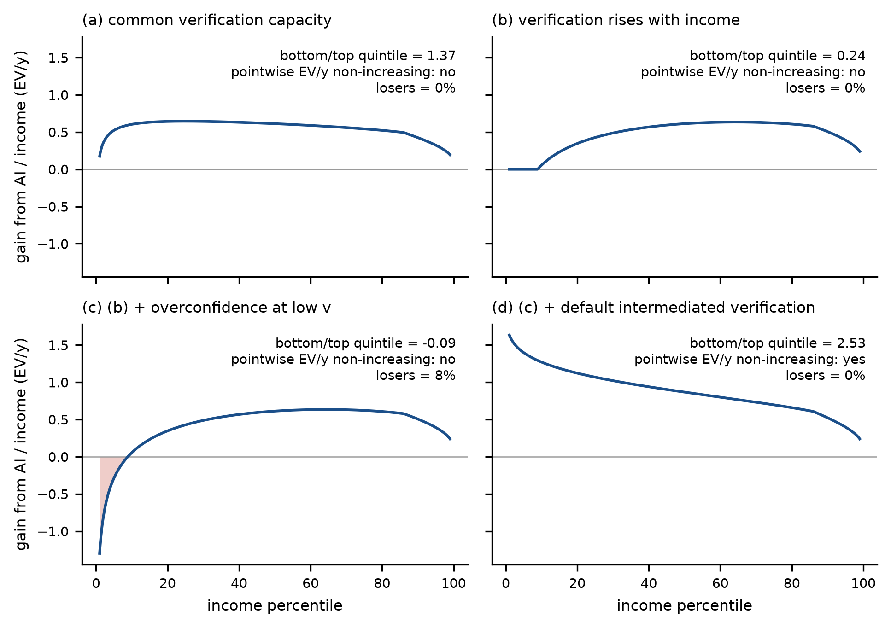
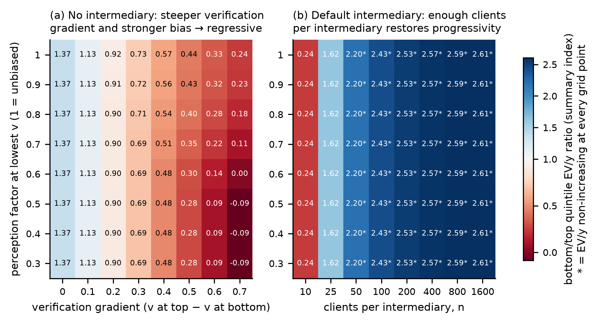
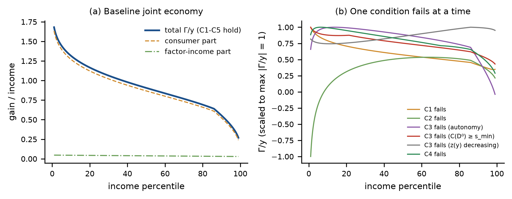

Bounded Intelligence and Inclusive Growth
Abstract
Suppose AI supplies codifiable cognition in abundance but not tacit local knowledge, the capacity to bear the consequences of error, or the work of turning a vague need into a well-specified task. When does the resulting growth favour lower-income households, now and in the next cohort? We model need-solving as combining codifiable cognition with these conversion inputs under strong complementarity. In a joint economy where conversion-input holders split their time in fixed shares between need-solving and a task market, five conditions and a supporting one are jointly sufficient for relatively progressive gains and a non-falling share of the next cohort holding conversion inputs: these inputs are widely held; verification is intermediated by default; AI stays non-autonomous, packaging is cheap and knowledge does not fall with income; fees leave intermediaries above a density threshold; apprenticeship is subsidised and mentor capacity suffices; and error risk is pooled. Each of the five conditions can fail alone and break the result. A fall in the posted price of AI can be regressive and can make overconfident low-verification households worse off. Each condition maps to an observable and a class of instruments, stated conditionally.
JEL codes: O33, J24, D83, O15, I38, L13
Keywords: artificial intelligence, inclusive growth,
tacit knowledge, verification, apprenticeship, intermediaries
This is a working draft. It has not been peer reviewed. The calibrated numbers in Section 4 are illustrations, not estimates. Replication code and all reading notes are in the accompanying replication package.
1 Introduction
Most chapters of the 2026 NBER volume The Economics of Transformative AI (Agrawal et al. 2026) consider AI that matches or exceeds humans in essentially all cognitive work. This paper takes a deliberately narrower premise. AI is a technology that supplies bounded intelligence in abundance: information, knowledge and analysis that can be written down and transferred. It does not supply tacit knowledge or high-level insight. The question is distributional. If AI is understood in this way, how can it be used to achieve inclusive growth? By inclusive growth we mean growth whose welfare gains accrue at least proportionately, and preferably disproportionately, to households in the lower part of the income and human-capital distribution, now and across generations. In the model, “across generations” is represented by one step: the share of the next cohort that acquires the scarce complement.
We do not claim that AI cannot acquire tacit knowledge. The premise is an assumption, and Section 3 records what changes if it fails. Under the premise, the answer to the question is a set of conditions. Each condition is tied to an observable quantity and to a class of institutional instruments.
The starting point is that solving a real need combines two kinds of input with low substitutability. One is codifiable cognition. The other is what we call conversion inputs: tacit knowledge of the particular case, the capacity to bear the consequences of error, and the work of turning a vague need into a well-specified task. Examples of solved needs are a diagnosis acted upon, a legal form filed correctly, and a crop decision taken. When the price of codifiable cognition falls toward marginal cost and complementarity is strong, value shifts toward the conversion inputs (Proposition 1). The distributional consequences then depend on five conditions and one supporting condition, each isolated by one proposition:
who holds the conversion inputs (Proposition 2);
whether users’ ability to verify AI output varies with income (Proposition 3);
whether AI remains non-autonomous and the cost of packaging needs into tasks is low (Proposition 4);
whether AI is priced near marginal cost, rather than captured as rent or leaked abroad (Proposition 5);
whether tacit knowledge keeps being reproduced through apprenticeship (Proposition 6); and, supporting,
who bears the risk of AI error (Proposition 7).
Proposition 8 places the factor-price model of Proposition 1 and the task market of Proposition 4 in a joint economy in which each unit of the conversion input divides its time in a fixed proportion between the two markets, states the conditions precisely in that economy, and proves that they are jointly sufficient for inclusive gains there. For each of the five conditions C1–C5, taken as a whole, it gives a parameterisation in which that condition alone fails and inclusiveness breaks; these parameterisations are constructed and checked numerically. Necessity is not shown for the separate components of a condition.
The central new mechanism is the verification channel. A household acting on AI-supplied advice pays not only the posted price but also the expected loss from errors it fails to catch and acts upon. That loss depends on the household’s verification capacity. With no heterogeneity in verification, a fall in the posted price is relatively progressive under two conditions: the need is a necessity, and the effective price falls below a threshold set by the lowest income, \((1-\eta)R(y_L)\). Absolute gains are never larger for poorer households in our model; this is a point the formalisation brings out. When verification capacity rises with income, the effective price falls less for low-verification households and the price fall can become regressive. When low-verification households also underestimate their error exposure, a fall in the posted price can make them worse off. An intermediary that verifies for many clients, with fixed costs and low marginal cost, restores relative progressivity when three conditions hold together: every household for which intermediation is efficient is served through it, the number of clients per intermediary exceeds a threshold that we derive, and the self-verifying households above the cutoff satisfy the gradient condition of Lemma 1. Density alone is not enough. Under overconfidence, a voluntary market can leave unserved some households for which intermediation is efficient. Whether it does depends on the fee and on how close their verification capacity is to the intermediary’s; making the intermediated channel the default removes the problem.
The mechanism offers one reading of an apparent conflict in the field-experimental evidence. Gaps between stronger and weaker users widen when users must select and implement open-ended advice (Otis et al. 2026). They narrow when assistance is embedded in structured tasks (Brynjolfsson et al. 2025b; Cruces et al. 2026). The verification channel predicts exactly this pattern. It is our reading of the evidence, not the authors’ own classification, and Section 7 states it as a testable prediction.
The second mechanism is an apprenticeship externality under entry-task automation. Tacit knowledge is acquired by performing entry tasks alongside experts. Entry tasks are largely codifiable, so AI substitutes for them. Firms do not internalise the value of the tacit knowledge that novices carry away (Becker 1962), and novices cannot borrow against it (Ide 2025). When AI makes entry tasks cheap, market apprenticeship falls below the social optimum, provided the expert premium is positive, some supervision costs exceed the AI price, and mentors have enough capacity. With a uniform distribution of supervision costs, the gap widens as AI cheapens entry tasks, because the external value of an apprenticeship, the discounted expert premium \(\beta W\), rises (Proposition 6). When mentor capacity binds, a fall in apprenticeship for one cohort reduces the number of mentors available to the next, so the fall persists or deepens across cohorts (Corollary 1).
1.0.0.1 A running example.
We use one example throughout the paper. It is an illustration, not evidence, and it carries no numbers of its own. A primary-care clinic in a low-income district employs community health workers who follow up patients with chronic conditions between visits. Each worker uses an AI assistant that drafts follow-up questions, flags readings that look abnormal and proposes a next step. The assistant supplies codifiable cognition. What it does not supply is the worker’s knowledge of particular patients and their circumstances: who lives alone, who cannot afford this month’s prescription, who will not say that they have stopped taking it. In the model this knowledge is the conversion input. Each condition has a counterpart in the clinic. Condition 1 asks who holds that knowledge and whether a platform can encode it and take it over. Condition 2 asks whether the patient or the worker can check the assistant’s advice, and whether a doctor at the clinic reviews it. Condition 3 asks whether the assistant acts on its own, and how costly it is to turn a follow-up need into a task that can be delivered and paid for. Condition 4 concerns the usage and access fees that the AI supplier charges the clinic. Condition 5 asks whether new workers can learn beside experienced ones. The liability condition asks who bears the loss when advice is wrong. Each subsection of Section 3 returns to the clinic after its proposition. Where we need real numbers we use the evidence of Section 5, chiefly a study of an AI safety net in a network of primary-care clinics in Nairobi (Korom et al. 2025, 1). That study differs from the example in its setting and in the direction of checking, as Section 3.3 explains.
1.0.0.2 What is and is not claimed.
We claim four contributions. The first is a unified framework that derives the distributional consequences of bounded AI from complementarity between codifiable cognition and conversion inputs. The second is the verification channel, including the conditions under which a price fall is regressive and the density condition for intermediated verification. The third is the link between entry-task automation, the apprenticeship externality and the reproduction of the scarce complement across generations, including the persistence that arises when mentor capacity binds. We state this contribution narrowly (Section 2): concurrent work with closely related titles exists, and we have not read it. The fourth is a mapping from each condition to an observable and to classes of instruments, stated conditionally. No new empirical estimates are claimed. The calibrated numbers in Section 4 are illustrations.
1.0.0.3 On normative statements.
Following the NBER’s practice that its working papers contain no policy recommendations (resolution reproduced in Agrawal et al. 2026, front matter), Section 6 states implications only in conditional form: if the objective is X, instrument class Y affects condition Z through mechanism M.
1.0.0.4 Plan of the paper.
Section 2 positions the paper. Section 3 builds the model in stages, one condition per subsection, combines the conditions in a joint economy (Section 3.8) and collects the forces that push the other way (Section 3.9). Section 4 gives a calibrated illustration, Section 5 reviews the evidence by condition, Section 6 states implications conditionally, Section 7 lists testable predictions, and Section 8 concludes.
2 Related literature and positioning
2.0.0.1 Decentralisation and the alienability of knowledge.
Brynjolfsson and Hitzig (2026) formalise Hayek’s argument (Hayek 1945) in a three-party incomplete-contracts model (Grossman and Hart 1986; Hart and Moore 1990). When information assets are inalienable, joint surplus is higher when local managers own the complementary tangible assets (their Proposition 2, p. 308). They then argue that AI makes local knowledge codifiable and transferable (§12.4.2). Once information can be bundled with physical assets, the coordination logic favouring centralisation applies (§12.4.3, pp. 310–311).
The chapter also discusses limits to codifiability, embodied skills and the long tail, as a countervailing force that keeps delegation with “the human on the spot” (§12.6.1, p. 316). They note that these claims “push against the premise” of the volume. We do not claim that the chapter overlooks this possibility. Our premise adopts the limit as the maintained assumption. Under it, the step from their Proposition 2 to §12.4.3 does not go through, and the decentralisation conclusion stands. What we add is the distributional consequence: who receives the complementarity premium (Proposition 2), and how that interacts with conditions 2–5.2
2.0.0.2 Knowledge hierarchies, autonomy and packaging cost.
Garicano (2000) models organisations as allocating problems to knowledge. Ide and Talamàs (2025) add AI agents that can operate autonomously or non-autonomously. As summarised by Chatterji et al. (2026, 179), they model AI as able to perform non-codifiable knowledge work. That premise is the opposite of ours. We borrow only the distinction between autonomy and non-autonomy. In our setting, a non-autonomous AI is one that cannot supply the conversion input, so every task needs a person holding it.
Garicano (2026, 33–35) extends the Ide–Talamàs framework by endogenising the stock of addressable opportunities, which are created at unit cost \(C\). He interprets \(C\) as the “packaging cost” of turning a messy need into a clean task, including “verifying the result”. With autonomous AI, entry expands when \(C\) is below AI’s stand-alone value. With non-autonomous AI and a compute glut, the result is “wage compression, not collapse”. Proposition 4 adds the dependence of \(C\) on the density of the local conversion layer and contrasts who receives the gains from lower \(C\) in the two regimes.3
2.0.0.3 Complementarity.
Jones (2026, 55) reports estimates by Ahmadpoor and Jones (2019) that the task-aggregator parameter in research production is negative in essentially all fields, with \(\theta\approx-1\) for the median field. This is the harmonic-mean case, an elasticity of substitution of one half. Kremer (1993) implies \(\theta\le0\) whenever failure on any sub-task means overall failure. Hall (2026, 63–64) reports that the capital share of business R&D, averaged over the OECD countries with data, fell from about 15% (1981–2011) to about 10%, and that in the United States it was 8.25% in 2021 (Table 2C.1, p. 64). She concludes that a capital share of about 10% is more appropriate than one-third, which strengthens the bottleneck arithmetic. We apply complementarity between codifiable cognition and conversion inputs by analogy and say so.
2.0.0.4 Market power.
Athey and Scott Morton (2026) show that upstream market power in AI with two-part tariffs can blunt pass-through, leak rents abroad and harm unskilled workers. They also show that a cap on one fee shifts extraction to the other (pp. 106, 110). We cite rather than rebuild these results. Proposition 5 only maps pass-through and access fees into our distributional conditions, using standard pass-through tools (Weyl and Fabinger 2013).
2.0.0.5 Verification and reliance.
Stiglitz and Ventura-Bolet (2026, 383) note that users “are not constantly verifying everything they consume with AI”. Steyvers et al. (2025) document a calibration gap: participants overestimate the accuracy of LLM answers, and longer explanations raise confidence without raising accuracy. Agarwal et al. (2023) study an experiment with professional radiologists. In their model, a user who over-weights the AI signal (automation bias) makes a worse decision with AI assistance than without it for some signal realisations (p. 28 and appendix Proposition 1), whereas the radiologists in their sample under-weight AI predictions (abstract). Moore and Healy (2008) review overconfidence more generally. Ludwig et al. (2026, 277, fn. 6) note a trade-off between cognitive economy and agency in delegating reflection to algorithms.
2.0.0.6 Training, apprenticeship and entry-level work.
General training is not financed by firms in competitive labour markets (Becker 1962); Acemoglu and Pischke (1998, 1999) show when imperfect labour markets change this. Arrow (1962) is the classic statement of learning by doing.
Ide (2025) builds a task-based overlapping-generations model. In it, novices acquire tacit knowledge by working alongside experts, and knowledge-transfer contracts are incomplete because tacit knowledge is non-verifiable and cannot serve as collateral. Entry-level automation can then lower growth and welfare by reallocating novices toward less skilled mentors, even without fewer entry jobs (his Propositions 4–5, pp. 26–27). Our Proposition 6 shares Ide’s friction but isolates a different margin, the level of apprenticeship. It adds a “scissors” property: with a uniform distribution of supervision costs, the gap between the market and the efficient rate widens as AI cheapens entry tasks, because the external value \(\beta W\) of an apprenticeship rises. It also adds mentor capacity, which makes a fall in apprenticeship persist across cohorts. Ide notes (fn. 18, p. 27) that his model captures the hands-on-experience channel only through novice unemployment.
Concurrent work. Two 2026 SSRN working papers with closely related titles appear in our search: Akin (2026) and Singh (2026). Their full texts were not obtainable through open channels during this draft, and we have not read them. We therefore do not claim to be first to identify an apprenticeship externality from generative AI. Our claim is limited to the specific connection, within one model, between this externality, the verification channel and the cross-generation distribution of the scarce complement.
2.0.0.7 Empirical work on displacement.
Kogan et al. (2023) link patents to worker records. They find that with labour-augmenting technologies, earnings rise for new entrants but decline for incumbent workers (abstract). Brynjolfsson et al. (2025a, August 2026 version) document descriptive declines in the employment of young workers in AI-exposed occupations. Manning and Aguirre (2026) measure adaptive capacity across occupations.
3 Model
We build one model in stages. Each stage adds one mechanism, and each proposition isolates one condition. Proofs are in Appendix A. Throughout, gains are inclusive (relatively progressive) if the equivalent variation \(EV(y)\) divided by income \(y\) is non-increasing in \(y\). We report absolute gains alongside. Across generations, inclusiveness means that the share of each new cohort that acquires the scarce complement does not fall.
Each subsection follows the same order. It first states the argument
from the literature that it formalises, and what it keeps and changes.
It then states the proposition and writes the key step of the derivation
in the text, with the economic meaning of each term; the full proof
stays in Appendix A. Paragraphs on intuition and
comparative statics follow, then a statement of what the result does not
imply, orders of magnitude from the calibration of Section 4 or from sources read in full, and a
paragraph on how AI, or institutions, are moving the relevant parameter.
Each subsection ends with the clinic of the introduction, marked as an
illustration. The comparative statics are read off the closed forms in
the propositions. Where a statement in the text goes one step beyond a
proposition, the step is shown, and it is checked in
process/round5/check_text_derivations.py of the replication
package. Technical qualifications are in footnotes.
3.1 Technology of need-solving
The argument formalised here is the bottleneck logic of Jones (2026). When tasks are strong complements, making some of them very cheap raises output only up to a limit set by the tasks that remain. With a harmonic-mean aggregator and a non-labour cost share of one third, an infinite increase in machine intelligence raises the rate of research progress by a factor of \((2/3)^{-2}=2.25\) (p. 47). Kremer (1993) gives the limiting case in which failure on any one sub-task means failure of the whole. We keep the complementarity and apply it, by analogy, to two inputs into a solved need rather than to tasks in research. What we add is the identity of the input that remains scarce: under our premise it is the conversion input, and it is held by people.
A solved need \(S\) combines codifiable cognition \(c\) and a conversion input \(t\): \[\begin{equation} S=\big[\alpha c^{(\sigma-1)/\sigma}+(1-\alpha)t^{(\sigma-1)/\sigma}\big]^{\sigma/(\sigma-1)},\qquad \alpha\in(0,1),\ \sigma\in(0,1). \end{equation}\] Markets are competitive with constant returns. The price of \(S\) is normalised to one, a small-sector assumption. AI supplies \(c\) perfectly elastically at price \(p_c\), and holders of \(t\) earn \(w\). Zero profit requires \(\alpha^\sigma p_c^{1-\sigma}+(1-\alpha)^\sigma w^{1-\sigma}=1\).
Proposition 1 (Value shifts to the conversion input). Let \(\sigma<1\) and \(p_c<\alpha^{-\sigma/(1-\sigma)}\).
The return to \(t\) is \(w(p_c)=\big[(1-\alpha^\sigma p_c^{1-\sigma})/(1-\alpha)^\sigma\big]^{1/(1-\sigma)}\), which is strictly decreasing in \(p_c\).
The share of value accruing to \(t\) is \(s_t(p_c)=1-\alpha^\sigma p_c^{1-\sigma}\), which is strictly decreasing in \(p_c\) and tends to one as \(p_c\to0\).
As \(p_c\to0\), \(w(p_c)\to(1-\alpha)^{-\sigma/(1-\sigma)}<\infty\).
Let utility be quasilinear in a numeraire, so that changes in income are money-metric, and hold \(\tau(y)\ge0\) fixed. A household holding \(\tau(y)\) units of \(t\) gains \([w(p_c^1)-w(p_c^0)]\tau(y)\) from a strict price fall \(p_c^1<p_c^0\), and under quasilinearity with the price of \(S\) fixed this is its exact equivalent variation. Because \(w(p_c^1)-w(p_c^0)>0\), this gain relative to income is non-increasing in \(y\) if and only if \(\tau(y)/y\) is non-increasing.
For \(p_c\ge\alpha^{-\sigma/(1-\sigma)}\) the sector does not operate and \(w=0\). The case \(\sigma>1\), in which \(t\) is inessential, is outside the model (see the proof).
Part (iii) is the analogue in this setting of Jones’s bottleneck: even free cognition raises the return to the conversion input only to a bounded level, \(\bar w\). The proportional gain \(\bar w/w(p_c^0)\) is not uniformly bounded: it is large when the starting price is close to the shutdown price (in the calibration of Section 4, \(\bar w/w(1)=11.66\)). Part (iv) is static: it holds the distribution of \(t\) fixed, and Section 3.6 lets \(\tau\) respond. Part (iv) shows where the distribution is decided. It is decided by who holds \(t\).
3.1.0.1 The key step.
Under constant returns and competitive pricing, the unit cost of a solved need is \(\big[\alpha^\sigma p_c^{1-\sigma}+(1-\alpha)^\sigma w^{1-\sigma}\big]^{1/(1-\sigma)}\), and zero profit at the output price of one gives the condition stated above. Each term inside the bracket is a cost share. The term \(\alpha^\sigma p_c^{1-\sigma}\) is the share of each unit of revenue paid for cognition, and \((1-\alpha)^\sigma w^{1-\sigma}\) is the share paid to the conversion input; the two sum to one. With \(\sigma<1\), a fall in \(p_c\) raises the quantity of cognition used less than in proportion, so spending on cognition per unit of output falls. The revenue it releases goes to the only other input, so \(s_t=1-\alpha^\sigma p_c^{1-\sigma}\) rises, and \(w\) rises with it. Because the output price is held at one, the fall in the cost of cognition is paid out as a higher return to \(t\) rather than passed to buyers of \(S\). This is where the small-sector assumption does its work.4
3.1.0.2 Intuition.
Cheaper cognition makes each unit of the conversion input more productive, because what it is combined with costs less, but it cannot replace that unit. With strong complementarity, the binding input is the one that has not become cheaper, and its return rises. It rises to a ceiling. With \(\sigma<1\), cognition alone produces no solved need, so even free cognition raises what a unit of \(t\) can earn only to the finite level \(\bar w\).
3.1.0.3 Comparative statics.
A lower \(p_c\) raises \(s_t\) and \(w\) (parts (i)–(ii)). Where \(p_c\ge\alpha\), stronger complementarity, a smaller \(\sigma\), makes the share respond more to the price of cognition. The derivative of \(s_t\) with respect to \(\ln p_c\) is \(-(1-\sigma)\alpha^\sigma p_c^{1-\sigma}\), and its absolute value falls with \(\sigma\) whenever \(p_c\ge\alpha\).5 Stronger complementarity also lowers the ceiling: \(\bar w=(1-\alpha)^{-\sigma/(1-\sigma)}\) rises with \(\sigma\), because the exponent \(-\sigma/(1-\sigma)\) falls with \(\sigma\) and \(1-\alpha<1\). So, at prices \(p_c\ge\alpha\), the more the conversion input is a bottleneck, the faster value shifts toward it as cognition gets cheaper; at any price, the lower the level its return can reach. The left panel of Figure 1 shows the first effect for \(\sigma\in\{0.3,0.5,0.8\}\); its right panel plots the wage relative to its value at \(p_c=1\), not its level. Distribution moves only through \(\tau(y)/y\) (part (iv)).
3.1.0.4 What the proposition does not say.
It does not say that households gain as buyers of solved needs, because the output price is fixed. It does not say whether holders of \(t\) are poor or rich; that depends on \(\tau(y)\), which part (iv) leaves open and Section 3.2 takes up. It holds \(\tau\) fixed, so it says nothing about how the stock of conversion inputs responds over time (Section 3.6). And \(\sigma<1\) between cognition and conversion inputs is an assumption made by analogy with estimates for research tasks, not an estimate for need-solving.
3.1.0.5 Magnitudes.
In the calibration (\(\sigma=\alpha=0.5\)), the conversion input’s share of value is 0.29 at \(p_c=1\) and 0.78 at \(p_c=0.1\). The ceiling is \(\bar w=2\), which is 11.7 times \(w(1)\) (Section 4). The proportional gain is large because \(p_c=1\) is close to the shutdown price \(\alpha^{-\sigma/(1-\sigma)}=2\). Jones’s factor of 2.25 and our ratio of 11.7 measure different things: his is a rate of progress, ours a factor price.
3.1.0.6 The clinic (illustration).
A cheaper assistant makes each hour of a worker’s follow-up more productive, and the value of a solved follow-up shifts toward what the worker knows about her patients. In the model the holder of \(t\) receives the higher return. Whether a given worker does depends on who holds that knowledge (Section 3.2) and on how her pay is set, which the model represents only through competitive pricing.
3.2 Who holds the conversion input (condition 1)
Brynjolfsson and Hitzig (2026, sec. 12.4, pp. 307–311) formalise Hayek’s argument in a three-party property-rights model. They write the first-order conditions of the local managers and of headquarters under each ownership regime. When a manager’s local information asset is inalienable, giving her the complementary tangible asset strengthens her investment incentive, because it adds what she can obtain on her own; headquarters’ incentives are unchanged (p. 308). Their example is a franchise café whose manager learns neighbourhood tastes: if she owns the store and ovens, that learning raises both joint revenue and her fallback income if negotiations with the franchiser fail (p. 308). They then argue that AI makes local knowledge codifiable and transferable (§12.4.2), so that information and tangible assets can be bundled and their result for centralisation returns (§12.4.3, pp. 310–311). We keep their primitive, whether the local information asset is alienable, and take inalienability as the premise. We do not rebuild their ownership and investment problem. Under the same dichotomy we ask a different question: who receives the complementarity premium of Proposition 1. Regime H below corresponds to their inalienable case and Regime C to their codifiable case.
Consider two regimes. In Regime H (Hayek; our premise), \(t\) is inalienable and embodied in a dispersed population. In Regime C (codified), the situation of Brynjolfsson and Hitzig (2026, sec. 12.4.3), \(t\) can be codified into a protected asset owned by a central firm and reproduced at marginal cost \(k_t\ge0\). Holders supply \(t\)-services at opportunity cost \(r_h\ge0\), and the two sources are perfect substitutes.
Proposition 2 (The premise decides who receives the premium). In Regime H, dispersed holders receive \(w(p_c)\tau(y)\), which rises as \(p_c\) falls. In Regime C, let the holders and a single owner of the codified asset compete in prices (Bertrand) to supply \(t\)-services that users value at \(w(p_c)\) per unit.
If \(\min\{r_h,k_t\}>w(p_c)\), no \(t\)-services are traded.
If \(\min\{r_h,k_t\}\le w(p_c)\), the price is \(P_C=\min\{w(p_c),\max\{r_h,k_t\}\}\). If \(r_h\le k_t\), holders supply (a tie \(r_h=k_t\) is resolved in favour of holders), and their premium over opportunity cost is \(\min\{w(p_c),k_t\}-r_h\le k_t\) per unit. If \(k_t<r_h\), the owner supplies and earns \(\min\{w(p_c),r_h\}-k_t\) per unit, and holders earn no premium.
In either case holders’ premium does not rise as \(p_c\) falls once \(w(p_c)\ge k_t\), and it vanishes as \(k_t\to0\), whatever \(p_c\) is.
Combined with Brynjolfsson and Hitzig’s Proposition 2, and with the standard property-rights premise that residual control translates into bargaining power, the premise places both decision rights and the complementarity premium on the dispersed side. The observable for condition 1 is the concentration of conversion-input holdings relative to income, \(\tau(y)/y\). Its proxies include the share of need-solving value earned by local intermediaries, community workers and households themselves.
3.2.0.1 The key step.
In Regime C the two sources of \(t\)-services are perfect substitutes, so price competition reduces to a comparison of costs. The lower-cost side serves the market at the rival’s cost, capped at users’ willingness to pay: \(P_C=\min\{w,\max\{r_h,k_t\}\}\). Two terms carry the economics. The reproduction cost \(k_t\) is the price at which a copy of the holders’ knowledge can be supplied, and it caps what holders can charge. The holders’ opportunity cost \(r_h\) is what their time is worth elsewhere, and it caps what the owner of the codified asset can charge. The return \(w(p_c)\), which Proposition 1 pushes up, enters only through the cap.
3.2.0.2 Intuition.
In Regime H the premium is a scarcity rent. Nobody can supply the holders’ knowledge except the holders, so when cheaper cognition raises the value of that knowledge, the holders receive the increase. In Regime C the knowledge has a reproducible substitute. A higher \(w(p_c)\) raises what users would pay but not what they have to pay, which is set by the cost of the next-best source. Once \(w(p_c)\) exceeds \(k_t\), the rise in value described by Proposition 1 stops reaching holders. Users pay \(P_C\le w(p_c)\); because the model specifies no downstream demand, it does not say who receives the difference. If \(k_t<r_h\), the owner of the codified asset earns the margin \(\min\{w,r_h\}-k_t\).
3.2.0.3 Comparative statics.
In Regime H the holders’ gain rises with the fall in \(p_c\) and with holdings \(\tau(y)\). In Regime C, when holders supply (\(r_h\le k_t\)), their premium \(\min\{w,k_t\}-r_h\) rises with \(k_t\) up to the cap \(w(p_c)\), falls with \(r_h\), and does not respond to \(p_c\) once \(w\ge k_t\). When the owner supplies (\(k_t<r_h\)), holders earn nothing above their opportunity cost, whatever the other parameters. The premium that holders keep in Regime C is therefore weakly larger the higher the cost of codifying and reproducing their knowledge, never exceeds \(w(p_c)-r_h\), and vanishes as \(k_t\to0\) (part (iii)).
3.2.0.4 What the proposition does not say.
It does not say which regime holds; that is the premise. It does not model decision rights or ownership. The step from the premium to decision rights is Brynjolfsson and Hitzig’s Proposition 2, together with the property-rights premise stated above. It does not say that codification lowers welfare: in Regime C users pay \(P_C\le w(p_c)\) per unit, while in Regime H holders receive \(w(p_c)\) per unit, and the model does not rank the regimes. Nor does it say whether the owner of the codified asset is domestic or foreign; Section 3.5 treats leakage.
3.2.0.5 How AI moves this parameter.
The parameter is \(k_t\), the cost of codifying a conversion input and reproducing it. Brynjolfsson and Hitzig (2026, sec. 12.4.2, p. 310) give examples in which AI lowers it. One is a tool that records radiologists’ eye-tracking sessions to train diagnostic assistants. Another is a language model trained on call-centre transcripts that made some of the best agents’ practice available to newer agents. A third is a market in which specialists are paid to create training data for AI firms; in our terms, holders are paid once for knowledge that is then reproduced at \(k_t\). For the call-centre case, the chapter reads the result as AI capturing tacit expertise. Under our premise, what is transferred is the codifiable part of best practice, and the study (Brynjolfsson et al. 2025b) does not distinguish the two. The same chapter lists limits to codifiability (§12.6.1, p. 316): embodied and affective skills, the long tail of rare cases in which systems trained on historical data can fail, and idiosyncratic preferences. No study we read measures \(k_t\), or \(\tau(y)\) across incomes (Section 5). The calibration of Section 4 does not parameterise Regime C, so we give no number for it.
3.2.0.6 The clinic (illustration).
A worker’s knowledge of her patients is in Regime H as long as it stays with her: if she leaves, the clinic and the assistant lose it. It moves toward Regime C to the extent that her follow-up notes, entered into the platform, let the supplier reproduce at low cost what she knows about patients like hers. Proposition 2 then says that the rising value of that knowledge stops reaching her once the cost of reproducing it is below its value. What decides the case is not the assistant’s accuracy but whether her notes can become an asset owned by someone else. The record-portability instruments of Section 6 act on this. We have no evidence on how much of a community health worker’s knowledge such notes capture.
3.3 Demand and verification (condition 2)
The argument formalised here has two parts. The first is the reasoning behind part (a) below: when a large price fall reaches households previously priced out of a service, much of the consumer surplus accrues to them. The second is the observation of Stiglitz and Ventura-Bolet (2026, 383) that users “are not constantly verifying everything they consume with AI”, together with evidence that users overestimate the accuracy of AI answers (Steyvers et al. 2025). We combine the two by pricing the error. The price a household effectively pays for AI advice includes the expected loss from the errors it fails to catch. This keeps the logic of the price fall but makes its size depend on the household.
3.3.0.1 Environment.
Households have incomes \(y\in[y_L,y_H]\) and one indivisible need each, with reservation value \(R(y)=ry^\eta\), \(\eta\in[0,1)\). The parameter \(\eta\) is the income elasticity of willingness to pay; \(\eta<1\) means the need is a necessity.
Before AI, a professional solves the need without error at price \(P_0\). Households with \(R(y)\ge P_0\) buy; we call them incumbents. The rest are rationed at a corner.
With AI the posted price is \(p<P_0\). An AI error occurs with probability \(e\). A household with verification capacity \(v\in[0,1]\) catches it with probability \(v\), so with probability \(\pi(v)=e(1-v)\) the error is acted upon and causes loss \(L\). Verification capacity rises with income, \(v=v(y)\), \(v'\ge0\). The effective price is \[\begin{equation} p_e(y)=p+e\,(1-v(y))\,L . \end{equation}\] Households perceive \(\hat p_e(y)=p+\theta(v)e(1-v)L\), where \(\theta\in(0,1]\) is non-decreasing in \(v\); \(\theta<1\) is overconfidence. They choose among {nothing, professional, AI} on perceived prices, and welfare is evaluated at true prices. Households are risk neutral here; risk enters in Section 3.7.
Lemma 1 (Progressivity of an effective-price schedule). Suppose every household buys and faces a continuous, non-increasing, piecewise-\(C^1\) effective-price schedule \(\tilde p(y)\). Then \(EV(y)/y\) is non-increasing if and only if two conditions hold at every point of differentiability: \[\tilde p(y)+y\,|\tilde p'(y)|\le(1-\eta)R(y)\ \text{for entrants }(R<P_0),\qquad y\,|\tilde p'(y)|\le P_0-\tilde p(y)\ \text{for incumbents}.\]
3.3.0.2 The key step.
Lemma 1 drives the section. For a household that enters the market, the relative gain is \(EV/y=(R(y)-\tilde p(y))/y\), and its slope in income has the sign of \[\underbrace{\tilde p(y)}_{\text{level}}\;+\;\underbrace{y\,|\tilde p'(y)|}_{\text{gradient}}\;-\;\underbrace{(1-\eta)R(y)}_{\text{necessity}} .\] The three terms are three economic forces. The level term says that a given effective price is a larger fraction of a poorer household’s income, which pushes toward regressivity. The gradient term says that if the effective price falls with income, richer households pay less for the same service, which pushes the same way. The necessity term says that with \(\eta<1\) willingness to pay rises less than in proportion to income, so a given surplus is larger relative to a poorer household’s income; it is the only force toward progressivity. Proposition 3 states which term dominates in each case. With a common effective price the gradient term is zero, and progressivity requires the level to be below the necessity term at the bottom (part (a)). With verification rising in income the gradient term is \(eLyv'(y)\) (part (b)). An intermediary makes the effective price flat for the households it serves, which removes the gradient term on that segment and lowers the level to \(p_I\) (part (d)).
Proposition 3 (Verification channel).
Common verification capacity. Suppose \(p_e<P_0\). Absolute gains are non-decreasing in income. If some households are rationed before AI, relative gains are non-increasing over the whole distribution if and only if \(p_e\le(1-\eta)R(y_L)\). (Were \(\eta\ge1\), which the maintained assumption \(\eta<1\) excludes, no positive effective price would satisfy it.)
Verification rising with income, no bias. Let \(v\) be continuous and piecewise \(C^1\) with \(v'\ge0\), so that \(p_e(y)\) is continuous, non-increasing and piecewise \(C^1\), as Lemma 1 requires. On any interval of incomes at which all households buy, relative gains are locally regressive if the verification gradient \(eL\,y\,v'(y)\) exceeds \((1-\eta)R(y)-p_e(y)\) for entrants, or \(P_0-p_e(y)\) for incumbents who switch to AI (those with \(p_e(y)\le P_0\); incumbents with \(p_e(y)>P_0\) keep the professional and gain zero). Households with \(R(y)<p_e(y)\) are excluded, and exclusion concentrates at low \(v\).
Overconfidence. For an entrant \(y\) with \(\theta(v(y))<1\) and \(\pi(y)=e(1-v(y))>0\), every posted price in the non-empty interval \(\big(R(y)-\pi(y)L,\,R(y)-\theta\pi(y)L\big]\) leads the household to buy, and leaves it strictly worse off than without AI. The interval contains admissible prices \(p\ge0\) if and only if \(R(y)\ge\theta\pi(y)L\); its admissible part is \(\big(R(y)-\pi(y)L,\,R(y)-\theta\pi(y)L\big]\) if \(R(y)-\pi(y)L\ge0\), and \(\big[0,\,R(y)-\theta\pi(y)L\big]\) if \(R(y)-\pi(y)L<0\). The interval’s length \((1-\theta)\pi L\) is non-increasing in \(v\).
Intermediated verification. An intermediary verifies with quality \(v_I\), incurs a fixed cost \(F\) and marginal cost \(m\) per client, and serves \(n\) clients at the zero-profit fee \(q=m+F/n\). A household routed to it faces the effective price \(p_I\equiv p+q+e(1-v_I)L\). Suppose the lowest-income household is rationed before AI, \(R(y_L)\le P_0\), and the denominator of \(n^*\) below is positive. Relative gains are non-increasing over the whole distribution if three conditions hold together: (d1) every household for which intermediation is efficient, \(q\le eL(v_I-v)\), is served through it; (d2) \(p_I\le(1-\eta)R(y_L)\), that is \(p+m+F/n+e(1-v_I)L\le(1-\eta)R(y_L)\), equivalently \[n\ \ge\ n^*\equiv\frac{F}{(1-\eta)R(y_L)-p-m-e(1-v_I)L};\] and (d3) the conditions of Lemma 1 hold for the self-verifying households above the cutoff.
Under-demand under overconfidence. Intermediation is efficient for household \(y\) if and only if \(q\le b(y)\equiv eL(v_I-v)\). A household that scales its own error rate by \(\theta\) buys it only if \(q\le\hat b(y)\equiv eL[\theta(1-v)-(1-v_I)]\), and \(\hat b(y)<b(y)\) whenever \(\theta<1\) and \(v<1\). Households for which intermediation is efficient but not bought exist if and only if \(\hat b(y)<q\le b(y)\) for some household. Two sufficient conditions are: (e1) the fee lies between some household’s perceived and true benefit; or (e2) \(q=0\) and some household has \(v(y)<v_I\) and \(\theta(v)(1-v)<1-v_I\), which holds for \(v\) close enough to \(v_I\) whenever \(\theta(v_I)<1\). When such households exist, (d1) fails in a voluntary market. It holds if intermediation is the default channel for every household with \(q\le b(y)\).
Part (a) qualifies the intuition that the consumer surplus from a new good accrues mainly to previously rationed households. In relative terms it does, provided the need is a necessity and the effective price is low enough. In absolute terms incumbents gain \(P_0-p_e\), which is at least the \(R-p_e\) that entrants gain.
Parts (b)–(c) are the regressive cases. Part (d) states the joint conditions (routing, density and the residual gradient) under which intermediation restores progressivity. Part (e) states when a voluntary market for verification falls short under overconfidence. It is an existence result: with \(q=0\), a household buys intermediation if and only if \(\theta(v)(1-v)\ge1-v_I\), so whether under-demand occurs depends on \(\theta\) and on how far \(v\) lies below \(v_I\).
The observables for condition 2 are the gradient of verification capacity with income, the error rate of AI in the relevant domain, the size of losses from acted-upon errors, the calibration of users’ beliefs about AI accuracy, and the density of intermediaries.
3.3.0.3 Intuition, part by part.
(a) If everyone verifies equally well, AI is a new service at one effective price. Households previously priced out gain \(R-p_e\), which is large relative to their income when the need is a necessity, but only if the effective price is low enough for the poorest household. Otherwise the price is a large share of low incomes, and relative gains rise with income near the bottom. Incumbents always gain more in absolute terms, \(P_0-p_e\ge R-p_e\), because they were paying the professional’s price. (b) When verification rises with income, the same posted price buys a cheaper effective service for richer households, because they catch more of the errors. Relative gains then rise with income wherever the gradient outweighs the margin left by the necessity term, and households with \(R(y)<p_e(y)\) are excluded, with exclusion concentrated at low verification capacity. (c) Overconfidence adds losses, not just smaller gains. A household that underestimates its exposure buys at posted prices at which, counting the errors it will act upon, it is worse off than without AI. The range of such prices has length \((1-\theta)\pi L\), the part of the expected loss that the household does not see. (d) An intermediary that checks for many clients sells verification at a fee \(q=m+F/n\) that falls with the number of clients. Every household it serves faces the same effective price \(p_I\), so the gradient term disappears on that segment, and with enough clients the level is low enough. Above the cutoff, households verify for themselves, and Lemma 1 must still hold there. (e) A household that overrates its own verification also underrates what an intermediary would save it, by \(eL(1-\theta)(1-v)\), and may decline a service that is worth its fee. Making the service the default takes that decision away.
3.3.0.4 Comparative statics.
The thresholds are explicit. The condition in part (a) is easier to meet the lower the effective price and the larger \((1-\eta)R(y_L)\). The regressive case of part (b) is more likely the larger the error rate \(e\), the loss \(L\) and the slope \(v'\) of verification capacity in income. The set of prices that leave overconfident households worse off is wider the larger \(1-\theta\) and the exposure \(\pi=e(1-v)\), so it is widest for low-\(v\) households (part (c)). The density threshold \(n^*=F/[(1-\eta)R(y_L)-p-m-e(1-v_I)L]\) of part (d) rises with the intermediary’s fixed cost \(F\), its marginal cost \(m\), the posted price \(p\), the error rate \(e\) and the loss \(L\); it falls with the intermediary’s verification quality \(v_I\) and with willingness to pay at the bottom.6 Under-demand in part (e) occurs for fees in \((\hat b(y),b(y)]\), an interval of length \(eL(1-\theta)(1-v)\), so it occurs over a wider range of fees where overconfidence is stronger and own verification weaker.
3.3.0.5 What the proposition does not say.
It does not say that AI is regressive. Part (a) gives conditions under which a price fall is progressive in relative terms, and part (d) conditions under which intermediation restores progressivity. It does not say that absolute gains are larger for poorer households; in part (a) they never are. Part (d) is a sufficient condition, density alone does not deliver it, and for households above the cutoff it requires (d3) rather than establishing it. Part (e) is an existence result. It does not say that voluntary markets for verification generally fail. Verification capacity and overconfidence enter in reduced form, so the model does not say how \(v\) or \(\theta\) could be raised, for example by education, and it does not compare that route with intermediation.
3.3.0.6 Magnitudes.
In the calibration of Section 4, the expected loss from acted-upon errors is large relative to the posted price. At the lowest verification capacity it is \(e(1-v)L=0.25\times0.8\times3=0.6\), twelve times the posted price \(p=0.05\); at the highest it is 0.075 (parameters in Appendix Table 4). All of the variation in the effective price comes from the error term. With an intermediary, the effective price decomposes as \(p_I=p+q+e(1-v_I)L=0.05+0.045+0.0375=0.1325\), below the threshold \((1-\eta)R(y_L)=0.209\), and \(n=200\) clients exceeds \(n^*=49\). For the lowest-income household, every posted price up to 0.106 leads it to buy and leaves it worse off, so the posted price of 0.05 lies in the interval of part (c). In the evidence, clinicians with an AI safety net made 16.0% fewer diagnostic errors and 12.7% fewer treatment errors (Korom et al. 2025, Table 3, p. 16). In Otis et al. (2026), the same AI assistant lowered the performance index of below-median entrepreneurs by 0.08 SD and raised that of above-median ones by 0.16 SD (OSF preprint, Table 1). These numbers are compatible with the verification channel but do not identify it, and they are not estimates of \(e\), \(v\) or \(\theta\).
3.3.0.7 How AI moves these parameters.
Several parameters of this section depend on how AI tools are designed, not only on how accurate they are. The posted price \(p\) falls with the supplier’s cost, at the pass-through rate (Section 3.5). The perception factor \(\theta\) depends on how output is presented. In Steyvers et al. (2025, arXiv v2, pp. 12–13), participants’ confidence in LLM answers was worse calibrated than the models’ own confidence, and longer explanations raised confidence without raising accuracy (abstract); in the model this lowers \(\theta\). The authors also report that aligning the explanation’s language with the model’s confidence narrows the gap (abstract). Verification can also be built into the tool. In the Penda deployment, the model reviewed every visit at each major decision point and graded its feedback green, yellow or red, with red requiring review before the clinician could proceed (Korom et al. 2025, 5). Once Penda had iterated on the tool to improve its reliability and started active deployment, the share of AI-group visits left in red fell to 20%, while it stayed at 40% in the non-AI group (p. 18). Users’ own screening can be weak where it matters: Otis et al. (2026, 4) trace the divergence in their experiment to which suggestions entrepreneurs selected and implemented.
3.3.0.8 The clinic (illustration).
The patient is the household of the model. Suppose first that the assistant’s advice reached patients directly, for example as a message suggesting a change of dose. A patient who cannot judge the advice faces the full expected loss \(e(1-v)L\). If she also trusts the message more than she should, part (c) applies: she may follow advice that leaves her worse off than no advice. In the clinic, the community health worker who relays and checks the advice is a first layer of verification, and a doctor who reviews flagged cases is a second. Together they are the intermediary of part (d), with quality \(v_I\), a fixed cost \(F\) that includes the doctor’s time, and \(n\) patients per intermediary. Part (d) says that this arrangement restores relative progressivity if three things hold together: every patient for whom review is worth its cost is routed through it, the clinic serves enough patients to spread \(F\), and the patients who check for themselves satisfy (d3). Part (e) says that if review is optional, some patients who overrate their own judgement may skip it, depending on the fee; making review the default closes that gap. The Penda study differs from this example in two ways. Its subjects are clinicians in clinics, not community health workers following patients at home. And the direction of checking is reversed: the AI reviewed the clinician’s work and flagged potential errors, and all final decisions were made by the clinicians (Korom et al. 2025, 5, 7). The study therefore shows that a trained person working with an AI check made fewer errors than one working without it. It does not measure how often a person catches the AI’s errors, which is \(v_I\) in the model.
3.4 Autonomy and packaging cost (condition 3)
Garicano (2026, 33–35) uses a knowledge-hierarchy model in which humans with knowledge \(z\) and AI with knowledge \(z_{AI}\) solve problems, compute capacity is \(\mu\), and the stock of addressable opportunities becomes the bottleneck when compute is abundant. Who is paid depends on what is scarce. With autonomous AI and a compute glut, humans with less knowledge than AI become unemployed and rents flow to the owners of opportunities; with non-autonomous AI, every problem needs a person, human time is the bottleneck, and wages compress rather than collapse (p. 34). He then endogenises opportunities, which entrepreneurs create at unit cost \(C\), and shows that with autonomous AI, entry continues while \(C<z_{AI}\), keeping compute scarce and wages positive (p. 35). We keep the problem-solving primitives, the autonomy distinction, free entry and zero profit. We change four things. We drop the escalation layer, so each holder handles one opportunity and, working with AI, solves \(s_j=z_A+(1-z_A)z_j\).7 We consider only the case \(\mu>H\), in which compute is slack under non-autonomy. We read non-autonomy through our premise: an AI that cannot supply the conversion input needs a person in each slot. And we let \(C\) depend on the density \(D\) of the local conversion layer. The work that \(C\) stands for, “specifying the job, providing the right data, verifying the result, and making it safe to pay for” (p. 35), is largely conversion work. Garicano’s environment assumes that AI can acquire tacit knowledge (p. 33). Ours does not, and we borrow only the structure.
Following Garicano (2026), a mass \(H\) of holders of \(t\) have knowledge \(z_j\in[0,1]\). Entrepreneurs create addressable opportunities at unit cost \(C(D)=c_0+c_1/D\), where \(D\) is the density of the local conversion layer. A solved opportunity is worth one. AI alone solves a fraction \(z_A\) of problems; working with AI, human \(j\) solves \(s_j=z_A+(1-z_A)z_j\). Each human handles one opportunity per period. Compute capacity \(\mu\) exceeds \(H\), so it can staff every human-assisted opportunity and leave capacity for opportunities completed by AI alone. Under non-autonomy every opportunity needs a human. Under autonomy an opportunity can also be completed by AI alone. Entrepreneurs observe \(z_j\) and compete for each holder, so zero profit holds type by type. Agents are risk-neutral and non-employed holders earn zero.
Proposition 4 (Packaging cost and autonomy).
With non-autonomous AI, \(r^*=0\) and \(w_j=\max\{s_j-C(D),0\}\). A higher density \(D\) raises the wage of every holder who remains employed by \(c_1/D^2\) (a local statement: at the employment threshold the wage schedule has a kink), expands employment, and compresses wage ratios among the employed. A higher \(z_A\) raises the wage of employed holder \(j\) by \((1-z_j)\) per unit of \(z_A\): no employed wage falls, wages of employed holders with \(z_j<1\) rise, low-knowledge wages most, and the change differs across holders.
With autonomous AI and \(C(D)<z_A\), compute becomes scarce with rental \(r^*=z_A-C(D)\), and \(w_j=(1-z_A)z_j\). Wages do not depend on \(D\). A lower packaging cost accrues to compute owners, and a higher \(z_A\) lowers wages. Every holder with \(z_j>0\) is employed.
The observables for condition 3 are the share of AI-assisted tasks that still require a human act (non-autonomy), the cost of specifying, verifying and paying for a new task, and the density of local intermediaries.
3.4.0.1 The key step.
An opportunity is worth one if solved, and a holder solves it with probability \(s_j\). With free entry and competition for each holder, zero profit holds opportunity by opportunity: \[s_j\;=\;C(D)\;+\;r\;+\;w_j .\] The expected value of a solved opportunity pays for three things: its packaging, the compute it uses, and the holder. Which of the last two receives the residual depends on what is scarce. Under non-autonomy, every opportunity needs a holder and there is more compute than holders, so compute is free, \(r^*=0\), and the holder receives the whole residual \(s_j-C(D)\). Under autonomy, an opportunity can also be run by AI alone, earning \(z_A-C-r\). Entry into such opportunities continues until compute is fully used and priced at \(r^*=z_A-C(D)\). A holder is then paid only for what she adds to AI, \(s_j-C-r^*=(1-z_A)z_j\).
3.4.0.2 Intuition.
Under non-autonomy the holder is the bottleneck, so every saving in packaging cost reaches each holder who is employed, and so does every improvement in what AI solves, unless the holder already solves every problem (\(z_j=1\)). A rise in \(z_A\) helps low-knowledge holders most, because it fills in the problems they would otherwise fail. A fall in \(C\) is the same absolute gain for every employed holder, which is why wage ratios compress. Under autonomy the bottleneck moves to compute. A fall in \(C\) raises the rental of compute one for one and leaves wages unchanged. A rise in \(z_A\) raises what AI earns alone and lowers what the holder adds to it.
3.4.0.3 Comparative statics.
Under non-autonomy, the wage gain from a denser conversion layer, \(c_1/D^2\) per unit of \(D\), is larger where the layer is thin (low \(D\)) and where packaging depends heavily on it (high \(c_1\)). Employment expands, because more holders clear \(s_j\ge C(D)\). The gain from a rise in \(z_A\) is \(1-z_j\) per unit, largest for low-knowledge holders. Under autonomy, \(D\) and \(c_1\) do not affect wages, and a rise in \(z_A\) lowers them by \(z_j\) per unit. The condition \(C(D)<z_A\) under which part (ii) applies is easier to meet the denser the layer.
3.4.0.4 What the proposition does not say.
It does not say that autonomy lowers output or total welfare: in part (ii) the gains from cheaper packaging go to the owners of compute. It does not cover autonomy with \(C(D)\ge z_A\). In Garicano’s analysis that case stalls the creation of opportunities and lets their price absorb the value (p. 35), and it lies outside part (ii). It does not model how the conversion layer is built or what it costs, and it treats \(D\) as given (Section 3.8). It says nothing about holders with \(s_j<C(D)\) except that they are not employed.
3.4.0.5 Magnitudes.
In the calibration, raising \(D\) from 1 to 4 lowers \(C\) from 0.35 to 0.125, a wage gain of 0.225 for every employed holder, and lowers the wage ratio between holders with \(z=0.8\) and \(z=0.2\) from 1.73 to 1.43 (Section 4). For comparison, in Kogan et al. (2023) even labour-augmenting exposure is associated with a decline of 1–1.7% in incumbents’ cumulative five-year earnings (median to 90th percentile; p. 24), while it raises entrants’ earnings (abstract). That is evidence on who gains from new tasks, not a measurement of \(C\).
3.4.0.6 How AI and institutions move these parameters.
Garicano’s example of non-autonomy is radiology. Models beat radiologists on some benchmarks, yet in practice the systems remain non-autonomous, because real-world variation and liability keep a person in each slot (p. 34). Non-autonomy is thus partly a matter of rules. Brynjolfsson and Hitzig (2026, sec. 12.6.3, p. 318) note that sectoral laws in health and other fields may continue to require human oversight, and that professional licensing imposes human-in-the-loop obligations. On the packaging side, Garicano names data access, verification, liability and payment systems as what shapes \(C\) (p. 35); payment codes that allow intermediated services to be billed are one instance (Section 6). We read no measurement of \(C\), or of how it responds to the density of intermediaries.
3.4.0.7 The clinic (illustration).
An opportunity is a follow-up that someone can be paid for. Turning a patient’s vague need, such as “she has not been back since her last reading”, into such a task means knowing whom to contact, what to ask, what to check, and how the visit will be paid for; that is \(C\). Where the clinic has many workers who know their patients, \(C\) is low and more follow-ups are worth doing. Under a non-autonomous assistant each follow-up needs a worker, so the workers who are employed gain. If the assistant could contact patients and adjust treatment on its own, and the packaging cost were below what AI solves alone, \(C(D)<z_A\), part (ii) would apply, and cheaper packaging would raise the return to compute, not workers’ pay. With \(C(D)\ge z_A\) the autonomous case lies outside Proposition 4. The example says nothing about whether any current assistant is autonomous in this sense.
3.5 Market power in AI supply (condition 4)
Athey and Scott Morton (2026) study a foreign AI monopolist that sells to firms in a two-sector general-equilibrium model, with a per-unit usage fee and a per-firm access fee. Market power can blunt pass-through, leak rents abroad and harm unskilled workers (pp. 99, 106). They contrast their setting with the standard nonlinear-pricing problem of industrial organisation. There, with a fixed number of firms and no general-equilibrium effects, access fees do not distort production while usage fees do, so a monopolist keeps usage fees low and extracts surplus through access fees. In their model both fees change the size of the surplus through their effect on income (p. 107). We keep the upstream supplier, the two-part tariff and leakage, and we do not rebuild their general equilibrium. The proposition below is partial equilibrium. It takes the intermediated demand of Proposition 3(d) and asks how pass-through, and an access fee charged to intermediaries, change the progressivity threshold.
Let an upstream supplier with marginal cost \(k\) face the intermediated demand of Proposition 3(d). A share \(f\) of the supplier is foreign-owned. Under log-concave demand its optimal price has pass-through \(\rho=dp^*/dk\in(0,1]\).
Proposition 5 (Pass-through, leakage and access fees). After a small cost decline \(dk<0\), to first order in \(dk\) (terms of order \(o(|dk|)\) omitted), households gain \(\rho Q|dk|\), the supplier gains \(Q|dk|\), and domestic welfare rises by \([\rho+(1-f)]Q|dk|\). The progressivity condition (d2) is relaxed by \(\rho|dk|\). Let \(A\) be an access fee charged to each intermediary as a fixed amount per period, not per client. The intermediary’s zero-profit fee becomes \(q_A=m+(F+A)/n\), and (d2) becomes \[\text{(d2}_A\text{)}\qquad p+m+\frac{F+A}{n}+e(1-v_I)L\le(1-\eta)R(y_L),\quad\text{equivalently}\quad n\ \ge\ n^*(A)\equiv\frac{F+A}{(1-\eta)R(y_L)-p-m-e(1-v_I)L},\] so low-density catchments lose the guarantee of Proposition 3(d). This comparative static holds the usage price \(p\) fixed and requires a positive denominator. If the supplier sets \((p,A)\) jointly and lowers \(p\) when it raises \(A\), the net effect on \(n^*\) is ambiguous.
The observables for condition 4 are pass-through of AI cost declines into end-user prices, access-fee structures faced by intermediaries, and the foreign-owned share of AI supply.
3.5.0.1 The key step.
Two standard tools do the work (Weyl and Fabinger 2013). By pass-through, a cost decline \(dk<0\) lowers the supplier’s price by \(\rho|dk|\), so households, who buy \(Q\), gain \(\rho Q|dk|\) to first order. By the envelope theorem, the supplier’s profit rises by \(Q|dk|\): at the optimum a small price change has no first-order effect on profit, so only the direct cost saving on current output counts. Domestic welfare adds the households’ gain to the domestic share \(1-f\) of the supplier’s gain. For the distributional condition, the access fee is the key term. It is a fixed amount per intermediary, and intermediaries price at zero profit, so it is spread over clients, \(q_A=m+(F+A)/n\). It therefore enters the effective price at the bottom of the distribution exactly as the intermediary’s own fixed cost does, and it raises the density threshold to \(n^*(A)\).
3.5.0.2 Comparison with the textbook result.
In the textbook nonlinear-pricing problem an access fee does not distort production. In Athey and Scott Morton (2026) it does, because it changes income (p. 107) and reduces the number of active firms and thus variety (p. 110). In our setting it is not neutral either, for a third reason. The intermediary passes the fee to its clients, and a fee per intermediary costs more per client where there are fewer clients. An access fee therefore bears hardest on low-density catchments, which are the first to lose the guarantee of Proposition 3(d). The two models agree that both fees matter. They differ in the mechanism, and ours does not model the entry of intermediaries.
3.5.0.3 Intuition and comparative statics.
When pass-through is incomplete, \(\rho<1\), a supplier with market power keeps part of every cost decline. Households receive the fraction \(\rho\), and the progressivity condition is relaxed by the same \(\rho|dk|\), so with lower pass-through a given fall in cost moves the economy less far toward inclusiveness. Foreign ownership \(f\) lowers the domestic welfare gain from a cost decline but does not enter (d2\(_A\)): in this model leakage is a level effect, not a distributional one. The threshold \(n^*(A)\) rises linearly in \(A\), with slope \(1/[(1-\eta)R(y_L)-p-m-e(1-v_I)L]\). The slope is steeper where the margin between willingness to pay at the bottom and the other components of the effective price is thin.
3.5.0.4 What the proposition does not say.
It does not say what \(\rho\) is for AI services. Under log-concave demand it lies in \((0,1]\), and the model does not pin it down further. It does not say that a supplier who raises the access fee makes households worse off overall: if the supplier lowers the usage price at the same time, the net effect on \(n^*\) is ambiguous, as the proposition states. It does not model entry or exit of intermediaries, so \(n\) is given. And it is partial equilibrium: the general-equilibrium effects on wages that Athey and Scott Morton (2026) study are absent.
3.5.0.5 Magnitudes.
In the calibration without an access fee, \(n^*=49\). The threshold rises by about ten clients per unit of access fee, the slope \(n^*/F\) with \(F=5\). In the weak-necessity construction of Table 2, an access fee of \(A=30\) raises \(n^*\) to 345, above the \(n=200\) clients per intermediary, and relative gains then rise with income on 5.4% of the steps of the income grid.
3.5.0.6 How AI moves these parameters.
Athey and Scott Morton (2026, 110–11) point to forces on both sides. The AI stack spans chips, training, models and applications, and a single bottleneck can lead to high downstream prices, while open models, competitive entrants or fast followers may discipline incumbents (p. 110). They note that the arrival of DeepSeek showed how hard it may be to keep countries from fast-following others’ innovations (p. 111). They also warn of capability loss: if adoption displaces domestic production that is costly to rebuild, a country’s outside option in bargaining over AI prices may deteriorate (p. 111). Measured evidence on the supply side comes from Demirer et al. (2026) (preprint version, 12 June 2026), who use posted prices and usage on OpenRouter, an aggregator of AI inference services (pp. 1, 7). The minimum price of GPT-4-class intelligence fell from about $30 per million prompt tokens in mid-2023 to about three cents by late 2025, a decline of roughly 1,000-fold in two years. The authors attribute the decline to models that reach the same intelligence with less computation, to cheaper serving, and to competition among closed-source providers and from open-source entrants (p. 11). Controlling for benchmark intelligence, open-source models, which any provider can host (p. 3), are about 90% cheaper than closed-source ones, yet they account for less than 30% of tokens used (p. 13). Standard access is usage-based: providers post per-token prices that most customers take as given, with no fixed charge for hardware or model deployment, while large buyers negotiate volume discounts and committed capacity (pp. 5–6). The authors also report, citing their companion working paper, that the average price firms actually pay per token has stayed relatively stable because buyers move to more capable models (p. 12). In the model’s terms, these facts show large falls in posted usage prices and competitive pressure on them, which bear on \(\rho\). On our reading, standard API access carries no fixed access charge at the provider level (\(A=0\) at that layer); this says nothing about the access fees that downstream intermediaries face, or about negotiated contracts, whose terms the article does not report. The data come from one aggregator that handles a small share of API use and skews toward developers and technology firms (p. 7), and the authors leave open whether the market will consolidate (pp. 18, 21). The article does not measure the pass-through of AI cost declines to end users in low-income settings, or the access fees that intermediaries such as clinics face (Section 5). Of all the model’s parameters, \(\rho\) and \(A\) are the least measured. Which layer of the stack is the bottleneck, and how its pricing reaches the fees paid by clinics and other intermediaries, is an open question that Athey and Scott Morton (2026, 110) also raise.
3.5.0.7 The clinic (illustration).
The supplier charges the clinic a usage fee per consultation, part of \(p\), and may charge an access fee per clinic, \(A\). A clinic in a dense town spreads \(A\) over many patients. A rural clinic with few patients per worker cannot, and where \(n<n^*(A)\) the guarantee of Proposition 3(d) no longer holds for its patients. A cap on the usage fee alone can shift extraction to the access fee (Athey and Scott Morton 2026, 110); in this model that shift falls hardest on the thinnest catchments.
3.6 Apprenticeship and the reproduction of tacit knowledge (condition 5)
Three known arguments meet here. Becker (1962) shows that firms in competitive labour markets do not pay for general training, because workers can take it elsewhere; workers pay for it through lower wages. Arrow (1962) treats knowledge as acquired in the course of production. Ide (2025) combines the two ideas in a task-based overlapping-generations model in which novices learn by working beside experts and cannot pledge their future earnings, because tacit knowledge is neither verifiable nor usable as collateral (pp. 3, 9). We keep Ide’s friction. With it, Becker’s resolution fails, because novices cannot pay for training through a wage below zero. We change the margin. Ide’s mechanism works through which mentors novices are matched with. Ours works through how many novices are apprenticed at all, and therefore through how many mentors the next cohort has.
In a two-period overlapping-generations economy, the young acquire \(t\) only by performing an entry task alongside an expert. When old, experts earn \(\omega+W(p_c)\), where \(W(p_c)=w(p_c)-\omega\) falls with \(p_c\) by Proposition 1; non-experts earn \(\omega\). Earnings in old age are discounted by the factor \(\beta\in(0,1)\) per generation; the strict inequalities in Proposition 6 require \(\beta>0\).
Entry tasks are codifiable, so a firm can have the task done by a novice or by AI at price \(p_c\). Supervising a novice costs the firm \(\kappa_j\sim G\) on \([0,\bar\kappa]\). Two frictions apply. First, \(t\) is general and portable (Becker 1962). Second, novices cannot pledge future earnings, so their wage \(w_N\ge0\) (Ide 2025). Before AI, the alternative way to perform entry tasks costs \(\bar p>p_c\). Novices are in excess supply, so \(w_N=0\), and they cannot pay upfront training fees. The expert premium \(W\) depends on \(p_c\) but not on the stock of experts, as in the small-sector structure of Section 3.1; if \(W\) fell with the stock, \(a^*\) would solve a fixed point. The subsidy is lump-sum financed. We assume \(W(p_c)>0\), so that holding \(t\) pays, and \(p_c<\bar\kappa\), so that some supervision costs exceed the AI price; \(G\) has a density \(g>0\) on \([0,\bar\kappa]\).
Apprentices learn alongside an expert of the previous cohort, and each expert can supervise at most \(\chi\) apprentices. Let \(T_{t-1}\) be the share of the previous cohort that holds \(t\). At most \(\chi T_{t-1}\) novices of cohort \(t\) can be apprenticed, so the share of cohort \(t\) that acquires \(t\) is \[\begin{equation} \label{eq:capacity} T_t=\min\{a_t,\ \chi T_{t-1}\}, \end{equation}\] where \(a_t\) is firms’ demand for apprentices.
Proposition 6 (Apprenticeship externality). Suppose mentor capacity does not bind, \(\chi T_{t-1}\ge a^*\). Market apprenticeship is \(a^m=G(p_c)\), which falls from \(G(\bar p)\) before AI to \(G(p_c)\) after. The efficient rate is \(a^*=G(p_c+\beta W(p_c))>a^m\), and the share of cohort \(t\) holding \(t\) equals the apprenticeship rate. The per-cohort welfare loss is \(\int_{p_c}^{\min\{p_c+\beta W,\bar\kappa\}}(p_c+\beta W-\kappa)\,dG(\kappa)>0\). A per-apprentice subsidy \(s^*=\beta W(p_c)\) restores the optimum. A subsidy \(s=\bar p-p_c\) keeps the cohort share of \(t\)-holders at its pre-AI level \(G(\bar p)\), provided \(\chi T_{t-1}\ge G(\bar p)\). If \(G\) is uniform on \([0,\bar\kappa]\) and \(p_c+\beta W(p_c)\le\bar\kappa\), then the gap \(a^*-a^m=\beta W/\bar\kappa\) and the loss \((\beta W)^2/(2\bar\kappa)\) both rise as \(p_c\) falls.
The proposition shows that the external value of an apprenticeship, the discounted premium \(\beta W(p_c)\) that the novice carries away, rises as AI cheapens entry tasks. It does not say that the total social value \(p_c+\beta W(p_c)\) of an apprenticeship rises: that requires \(1+\beta W'(p_c)<0\), a condition on how steeply the expert premium responds to the AI price, which the model does not pin down.
3.6.0.1 The key step.
A firm compares two ways of getting an entry task done. A novice costs the supervision cost \(\kappa_j\) and a wage of zero; AI costs \(p_c\). The firm takes the novice if \(\kappa_j\le p_c\). Society counts one more benefit, the discounted premium \(\beta W(p_c)\) that the novice will earn as an expert, so the efficient rule is \(\kappa_j\le p_c+\beta W(p_c)\). The gap between the two rules is the external value \(\beta W\). It cannot be closed by contract, because the novice cannot pay it upfront, and the firm does not capture it, because the knowledge is portable. Under a uniform \(G\) and the interior condition \(p_c+\beta W\le\bar\kappa\), the omitted apprenticeships form a band of width \(\beta W\) in supervision cost, and the welfare loss is the triangle \((\beta W)^2/(2\bar\kappa)\). If the condition fails, the band is truncated at \(\bar\kappa\) and the formula does not apply.
3.6.0.2 Intuition: the scissors.
AI moves the two rules in opposite directions. It lowers \(p_c\), the private value of a novice to the firm, so fewer apprentices are hired. Through Proposition 1 it raises \(W\), the value of what an apprentice learns, so each omitted apprenticeship is worth more to society. One blade lowers the market rate; the other raises the external value \(\beta W\) of each omitted apprenticeship. With a uniform \(G\) and \(p_c+\beta W\le\bar\kappa\), the gap between the market and efficient rates then widens (Proposition 6); for other distributions of supervision costs the model does not sign the change in the gap.
When capacity binds, 3 links cohorts.
Corollary 1 (Mentor capacity and persistence). Let \(T_t=\min\{a_t,\chi T_{t-1}\}\).
Let demand be constant at \(a>0\). A positive stationary share requires \(\chi\ge1\). If \(\chi>1\), the stationary share is unique and equals \(a\). If \(\chi=1\), every \(T\in(0,a]\) is stationary, and the share stays at \(\min\{a,T_0\}\), the level set by its initial value; this is the permanence in (ii).
Suppose \(\chi\ge1\), \(T_0=a_H\), demand falls to \(a_L<a_H\) for cohort 1 and returns to \(a_H\) from cohort 2 on. Then \(T_t=\min\{a_H,\,\chi^{t-1}a_L\}\) for \(t\ge1\). With \(\chi=1\) the fall is permanent. With \(\chi>1\) the share returns to \(a_H\) after \(\lceil\ln(a_H/a_L)/\ln\chi\rceil\) further cohorts.
In (ii), the cumulative shortfall \(\sum_{t\ge1}(a_H-T_t)\) exceeds the one-cohort fall \(a_H-a_L\) if and only if \(\chi a_L<a_H\).
With \(\chi<1\), \(T_t\le\chi^tT_0\), so the share declines geometrically whatever firms’ demand.
Part (iii) is the cross-generation amplification. One cohort’s lost apprenticeships remove mentors for the next cohort, so a temporary fall in demand has a cumulative cost larger than its direct cost whenever capacity is tight. Proposition 6 and the subsidy result require capacity to be slack. Where capacity binds, a subsidy that restores demand restores the share only gradually, at the rate \(\chi\).
3.6.0.3 Intuition for the corollary.
An apprentice not trained today is a mentor missing tomorrow. If each expert can train at most \(\chi\) apprentices, one cohort’s shortfall caps the next cohort’s training. If \(\chi a_L<a_H\), the cap binds beyond the first cohort and the cumulative shortfall exceeds the one-cohort fall (part (iii)). For \(\chi>1\), recovery takes \(\lceil\ln(a_H/a_L)/\ln\chi\rceil\) further cohorts, more the closer \(\chi\) is to one (part (ii)). With \(\chi=1\) the cap never relaxes, and with \(\chi<1\) it tightens every period.
The observables for condition 5 are apprenticeship and supervised-practice intensity in AI-exposed occupations, employment of entry cohorts, and the wage premium for tacit expertise.
3.6.0.4 Comparative statics.
Under a uniform \(G\) with \(p_c+\beta W\le\bar\kappa\), the gap \(a^*-a^m=\beta W/\bar\kappa\) and the loss are larger the more weight is placed on the next period (higher \(\beta\)), the larger the expert premium \(W\), and the denser the distribution of supervision costs (smaller \(\bar\kappa\), so that \(g=1/\bar\kappa\) is larger). The subsidy that restores the optimum, \(s^*=\beta W\), rises as AI cheapens entry tasks. So does the subsidy that keeps the cohort share at its pre-AI level, \(\bar p-p_c\). When capacity binds, recovery after a temporary fall takes \(\lceil\ln(a_H/a_L)/\ln\chi\rceil\) cohorts, longer the closer \(\chi\) is to one. With \(\chi=1\) there is no recovery, and with \(\chi<1\) the share declines whatever demand does.
3.6.0.5 What the results do not say.
They do not say that AI must reduce the stock of tacit knowledge. The subsidy results show that the fall can be offset, and AI can also be used for practice rather than substitution, which the model does not represent. They do not say how \(t\) is distributed across incomes within the next cohort, which is not modelled (Section 3.8). They take \(W\) as independent of the stock of experts; if \(W\) fell with the stock, the efficient rate would solve a fixed point. And the subsidy is lump-sum financed, so who pays for it is outside the model.
3.6.0.6 Magnitudes.
In the calibration of Section 4, market apprenticeship falls by 16% to 0.672, against an efficient rate of 0.763, and the four values of \(\chi\) in Figure 6 cover the four cases of Corollary 1, from recovery within one cohort (\(\chi=1.2\)) to geometric decline (\(\chi=0.95\)). In the data, employment of 22–25-year-olds in the most AI-exposed occupations stands 19% below a kept-pace counterfactual (Brynjolfsson et al. 2025a, August 2026 version, p. 2), and junior employment at firms adopting generative AI falls by roughly 9% relative to senior employment after six quarters (Hosseini Maasoum and Lichtinger 2025, June 2026 version, p. 5). These measure entry hiring, not apprenticeship.
3.6.0.7 How AI moves these parameters.
AI acts on demand for apprentices, \(a\), and possibly on mentor capacity, \(\chi\). The entry-hiring declines just cited are evidence on \(a\). On the other side, in the call-centre deployment of Brynjolfsson et al. (2025b), agents with less than a month of tenure gained 46% in resolutions per hour (WP p. 16, Fig. 5B), and gains persisted during software outages, which the authors read as learning (p. 3); agents also frequently ignored the recommendations (p. 18). In the Penda deployment, the share of AI-group visits in which the first AI output was red fell from 45% to 35% over the study, which the authors read as clinicians learning (Korom et al. 2025, 18). Tools of this kind may raise what a novice learns per period, or let an expert supervise more novices, a higher \(\chi\); the studies measure neither. Ludwig et al. (2026, 277, fn. 6) frame the design choice as a trade-off between cognitive economy and the benefits of agency.
3.6.0.8 The clinic (illustration).
A new community health worker learns her district by doing routine calls and home visits beside an experienced worker. If the assistant does the routine calls, the clinic needs fewer trainees: the private value of a trainee, \(p_c\) in the model, falls. What the trainee would have learned, such as how to read a household or which patients need a visit rather than a call, is worth more once the assistant has made routine cognition cheap. That is the scissors. If each experienced worker can supervise only a few trainees, a period in which the clinic hires fewer trainees leaves it with fewer supervisors later, and Corollary 1 applies. The model does not say whether such an assistant would in practice teach trainees or replace their practice.
3.7 Liability (supporting condition)
The question is who bears the risk of AI error. The standard result in insurance economics is that a risk-averse household offered insurance at an actuarially fair premium prefers to insure fully. When the choice is between full pooling and none and the premium carries a loading, the household pools only if its risk premium exceeds the loading cost. Proposition 7 applies this result to the allocation of AI-error risk among users, intermediaries and suppliers, with two additions: risk aversion falls with income, and the error probability may depend on verification capacity.
Let households have CARA risk aversion \(\lambda(y)>0\), decreasing in income. An acted-upon error occurs with probability \(\pi\in(0,1)\) and causes loss \(L>0\); neither depends on the liability regime. A household that bears its own error risk pays, on top of \(\pi L\), the risk premium \[RP(y)=\lambda(y)^{-1}\ln\!\big(1-\pi+\pi e^{\lambda(y)L}\big)-\pi L .\] Under pooled liability the household pays a premium \((1+\ell)\pi L\), with loading \(\ell\ge0\), and bears no risk. The premium is experience-rated: it is charged at the household’s own error probability.
Proposition 7 (Liability).
For given \((\pi,L)\), \(RP(y)\) is positive and strictly decreasing in \(y\). It adds a downward-sloping term to the effective-price schedule and, by Lemma 1, pushes toward regressivity.
A household weakly prefers pooling if and only if \(RP(y)\ge\ell\pi L\). With \(\pi\) common to all households, the set of households that prefer pooling is, if non-empty, an interval at the bottom of the income distribution.
Pooling removes the risk-premium term from the effective-price schedule. Where the error probability varies with income, \(\pi(y)=e(1-v(y))\), the pooled premium \((1+\ell)\pi(y)L\) keeps the income gradient of the expected loss. That gradient is the verification channel of Proposition 3, scaled by \(1+\ell\), and is handled there.
Part (iii) states what pooling does and does not do. It removes the part of the regressive term that comes from risk aversion. It does not remove the part that comes from unequal verification capacity, unless premiums were charged at the population-average error probability; we do not assume that, because a community-rated premium would weaken the incentive to verify, which the model does not represent.
3.7.0.1 The key step.
The risk premium is the gap between the certainty-equivalent cost of the loss lottery and its expected value. For small risks it is approximately \[RP(y)\;\approx\;\tfrac{1}{2}\,\lambda(y)\,\pi(1-\pi)\,L^2 ,\] which is the Arrow–Pratt approximation (Pratt 1964): half the coefficient of absolute risk aversion times the variance of the loss.8 Two features follow. The premium scales with \(\lambda(y)\), which falls with income, so the same exposure costs a poorer household more. And it scales with \(L^2\), so large losses matter disproportionately.
3.7.0.2 Intuition.
A household that bears its own error risk pays twice for an error it may act upon: once in the expected loss, and again as a premium for bearing the uncertainty. The second payment is larger for poorer households, because a given loss hurts them more. Pooling removes the second payment and keeps the first. Because the pooled premium is experience-rated, households that verify less still pay more, so pooling does not undo the verification channel.
3.7.0.3 Comparative statics.
The risk premium rises with risk aversion \(\lambda\) (proof of Proposition 7) and, for small risks, with the loss \(L\) (the approximation above); for given \((\pi,L)\) it falls with income. The set of households that prefer pooling is larger the smaller the loading \(\ell\). With \(\pi\) common, it is an interval at the bottom of the distribution whose upper end rises as \(\ell\) falls. With \(\ell=0\) every household weakly prefers pooling.
3.7.0.4 What the proposition does not say.
It does not say that pooling makes AI use progressive. Pooling removes one regressive term and leaves the verification gradient (part (iii)). Premiums are experience-rated by a modelling choice made in revision round 1, which keeps the term in which the expected loss varies with verification capacity (Proposition 3); the model has no moral hazard. And it does not say who should hold the pooled risk (user, intermediary or supplier), only that pooling at experience-rated premiums removes the risk premium wherever the risk is held.
3.7.0.5 Magnitudes.
In the calibration, with \(\lambda(y)=1/y\), the average risk premium is 1.94 in the bottom income decile and 0.06 in the top, in units of the median household’s willingness to pay (Section 4). The posted price of the AI service is 0.05 in the same units.
3.7.0.6 How rules move this parameter.
AI does not change \(\lambda\); rules change who bears \(L\). Directive (EU) 2024/2853 brings software within the definition of a product (Art. 4) and introduces presumptions of defectiveness and causation (Art. 10) (European Parliament and Council of the European Union 2024). The Swedish Patient Injury Act requires care providers to hold patient insurance (§12) and compensates injury that, with a preponderance of probability, was caused by avoidable care (§6) (Sveriges riksdag 1996). In the model’s terms, such rules move part of \(L\) from the household to the producer or to an insurance pool; how much depends on enforcement, which the model does not represent. Brynjolfsson and Hitzig (2026, 318) note that liability and insurance rules for AI are yet to be written.
3.7.0.7 The clinic (illustration).
If a patient follows wrong advice and is harmed, someone bears the loss: the patient, the worker or the clinic, or the supplier. A poor patient who bears it alone pays the risk premium of part (i) on top of the expected loss. Pooling the risk, through a no-fault scheme of the Swedish kind or insurance held by the clinic, removes that premium. Part (iii) adds that if patients’ premiums were rated on their own error exposure, those who verify less would still pay more, so pooling does not substitute for review. In the Penda design, all final decisions were made by clinicians (Korom et al. 2025, 7), which places the decision, though not necessarily the loss, with the clinician.
3.8 Synthesis in a joint economy
Propositions 1 and 4 describe two markets for the services of conversion-input holders. To combine them we place them in a joint economy in which holders divide their time between the two markets in a fixed proportion.
3.8.0.1 The joint economy.
Household \(y\) holds \(\tau(y)\ge0\) units of \(t\). Each unit embodies knowledge \(z(y)\in[0,1]\), the same for all units a household holds, and has one unit of time per period. Time is allocated in an exogenously fixed proportion \(\varphi\in(0,1)\). The share \(\varphi\) supplies conversion services to the need-solving sector of Section 3.1, which pays \(w(p_c)\) per unit of time (Proposition 1), so a unit of \(t\) earns \(\varphi\,w(p_c)\) there. The share \(1-\varphi\) is spent in the task market of Section 3.4: the unit handles \(1-\varphi\) opportunities at the wage \(w_j\) per opportunity, with \(z_j=z(y)\) (Proposition 4), and earns \((1-\varphi)\,w_j\). The mass of holder time in the task market, the counterpart of \(H\) in Proposition 4, is \(H=(1-\varphi)\int\tau(y)\,dF(y)\), where \(F\) is the income distribution, and we maintain \(\mu>H\).
This allocation is feasible without changing either market. In Proposition 1, \(w(p_c)\) is fixed by the zero-profit condition and does not depend on the quantity of \(t\) supplied, so moving part of each unit’s time to the task market changes the scale of the need-solving sector but not its wage. In Proposition 4, wages are set opportunity by opportunity and do not depend on how many opportunities a holder handles, and \(\mu>H\) keeps compute slack. Three points are assumed rather than derived. First, \((p,p_c,z_A,D)\) is an exogenously given parameter vector: we do not model how one AI improvement moves its components together, nor any relation between the density \(D\) and holdings \(\tau\); \(D\) is set by how the intermediary layer is established. Second, holders do not choose \(\varphi\); that case is not treated. Third, the fixed allocation remains a modelling simplification, not a general-equilibrium treatment of the two markets. It lets the factor-price channel and the task channel act on the same holdings.
3.8.0.2 The AI change.
The AI change is the move from a pre-AI state \((p_c^0,z_A^0,D^0)\), in which households have no AI service, to a post-AI state \((p_c^1,z_A^1,D^1)\) with \(p_c^1\le p_c^0\), \(z_A^1\ge z_A^0\) and \(D^1\ge D^0\), in which households can buy the AI service of Section 3.3 at posted price \(p\). The improvement can therefore be a fall in the price of codifiable cognition, a rise in what AI solves alone, a denser conversion layer, or any combination. Household \(y\)’s gain is \[\begin{equation} \label{eq:G} \Gamma(y)=EV_{\text{cons}}(y)+\tau(y)\,g(y),\qquad g(y)=\varphi\,\underbrace{\big[w(p_c^1)-w(p_c^0)\big]}_{\Delta w_P}+(1-\varphi)\,\underbrace{\big[w_T^1(z(y))-w_T^0(z(y))\big]}_{\Delta w_T(y)}, \end{equation}\] where \(EV_{\text{cons}}\) is the consumer gain of Proposition 3 and \(w_T^k\) is the task-market wage in state \(k\). The two shocks enter differently. A fall in \(p_c\) changes the need-solving wage per unit of time by the same amount \(\Delta w_P\ge0\) for every holder. A rise in \(z_A\) changes the task wage by \((1-z(y))\Delta z_A\), which differs across holders (Proposition 4(i)). A rise in \(D\) changes it by \(C(D^0)-C(D^1)\), the same for every holder who is employed in both states. The next cohort’s share of \(t\)-holders is \(T_1=\min\{G(p_c+s),\,\chi T_0\}\), with \(T_0=G(\bar p)\) (equation 3).
Proposition 8 (Joint sufficiency; weak individual necessity). In the joint economy with time share \(\varphi\in(0,1)\) and \(\mu>H\), suppose \(R(y_L)\le P_0\) and \((1-\eta)R(y_L)-p-m-e(1-v_I)L>0\), and:
(C1) Regime H holds, \(\tau(y)\ge0\) and \(\tau(y)/y\) is non-increasing;
(C2) intermediated verification is offered; (d1) and (d3) of Proposition 3(d) hold; intermediation is the default channel if \(\theta<1\); and liability is pooled (Proposition 7);
(C3) AI is non-autonomous in both states; \(C(D^0)<s^0_{\min}\equiv z_A^0+(1-z_A^0)\min_y z(y)\); and knowledge \(z(y)\) is non-decreasing in income;
(C4) after pass-through and access fees, (d2\(_A\)) of Proposition 5 holds, that is \(n\ge n^*(A)\), in every catchment;
(C5) the apprenticeship subsidy satisfies \(s\ge\bar p-p_c\), and mentor capacity satisfies \(\chi\ge1\).
With pooled liability at loading \(\ell\), the conditions (d1)–(d3) and (d2\(_A\)) are read with \(L\) replaced by \((1+\ell)L\). Then \(\Gamma(y)/y\) is non-increasing in \(y\), and \(T_1\ge T_0\): the next cohort’s share of \(t\)-holders does not fall. Conversely, for each of C1–C5 there is a parameterisation of the joint economy with \(\varphi=0.5\) in which the maintained assumptions and all other conditions hold, that condition fails, and either \(\Gamma(y)/y\) increases on an interval or \(T_1<T_0\). The conditions are not individually necessary in every parameterisation.
3.8.0.3 How the conditions combine.
The consumer part and the factor-income part are handled separately. For the consumer part, C2 supplies (d1) and (d3), C4 supplies (d2\(_A\)), and Proposition 3(d) gives \(EV_{\text{cons}}(y)/y\) non-increasing. For the factor-income part, the first two items of C3 keep every holder employed in both states, so the task wage is linear in knowledge and \(\Delta w_T(y)=(1-z(y))\Delta z_A+[C(D^0)-C(D^1)]\). The third item of C3 makes \(1-z(y)\) non-increasing in income. With \(\Delta w_P\ge0\), \(\Delta z_A\ge0\) and \(C(D^0)\ge C(D^1)\), the per-unit gain \(g(y)=\varphi\Delta w_P+(1-\varphi)\Delta w_T(y)\) is therefore non-negative and non-increasing, because \(\varphi\) and \(1-\varphi\) are positive constants. C1 makes \(\tau(y)/y\) non-negative and non-increasing. The product of two non-negative, non-increasing functions is non-increasing, and so is the sum of the two parts.
The third item of C3 is needed because a rise in \(z_A\) raises low-knowledge wages most. If knowledge fell with income, a rise in \(z_A\) would raise the wages of richer holders most, and the factor-income part could become regressive even with \(\tau(y)/y\) constant. Section 4 constructs such a case. The second item is needed because holders who are not employed before the change gain less from a denser conversion layer than those who are. The first is needed because, under autonomy, a rise in \(z_A\) lowers holders’ wages (Proposition 4(ii)), and a negative per-unit gain multiplied by a decreasing \(\tau(y)/y\) is increasing.
For the next cohort, C5 gives \(G(p_c+s)\ge G(\bar p)=T_0\) and \(\chi T_0\ge T_0\), so \(T_1\ge T_0\). The distribution of \(t\) within the next cohort across incomes is not modelled.
The sufficiency part is proved in Appendix A. The weak-necessity parameterisations are constructed in the code and reported in Section 4 (Table 2). Each is checked by evaluating every condition and the conclusion on an income grid, which is a numerical verification of the stated examples, not a general proof. Weak necessity is shown for each of C1–C5 as a whole, not for the separate items within a condition. In particular, no construction makes default routing or pooled liability fail alone within C2, and in the calibration of Section 4 voluntary routing does not break the conclusion.
3.8.0.4 How the conditions depend on one another.
The proof shows three links. First, the verification guarantee is split between conditions 2 and 4. Condition 2 supplies routing (d1) and the residual gradient condition (d3); the density condition (d2) of Proposition 3(d), once access fees are included, is condition 4’s inequality \(n\ge n^*(A)\). The supplier’s fee structure and the size of the intermediary layer therefore jointly decide whether the guarantee holds. Second, conditions 1 and 3 multiply. The factor-income part of \(\Gamma(y)/y\) is the product of the per-unit gain \(g(y)\) and holdings relative to income, \(\tau(y)/y\). Condition 3 makes \(g\) non-negative and non-increasing, and condition 1 makes \(\tau(y)/y\) non-increasing; when either fails, the product can increase with income even though the other holds, as the C1 and C3 rows of Table 2 show. Third, condition 5 is the only one that looks forward. It guarantees the next cohort’s share of holders, not its distribution across incomes, and in the model it does not feed back into the current cohort’s gains. The liability condition enters only through the consumer part, by removing the risk premium and rescaling \(L\).
3.8.0.5 Which conditions are closest to failing.
The model does not rank the conditions by how likely they are to fail; that is an empirical question. It does show which of them hold with little room in the calibration. Condition 5 holds with equality: the subsidy is set at \(s=\bar p-p_c=0.128\), so a further fall in \(p_c\) without a higher subsidy would violate it and lower \(T_1\) below \(T_0\). The density condition holds with room to spare, \(n=200\) against \(n^*=49\), but an access fee of the size used in Table 2 removes that room. Default routing, one item of condition 2, did not matter in the calibration, because the households that under-demand intermediation are near the top of the distribution.
3.8.0.6 The clinic, put together (illustration).
In the clinic’s words, the conditions read as follows. The workers keep the knowledge of their patients (condition 1). Advice reaches patients through a worker and a reviewing doctor by default, the clinic serves enough patients to spread the cost of review, and losses from errors are pooled (condition 2 and liability). The assistant needs a worker for each follow-up, follow-ups are cheap to organise, and the knowledge of workers does not fall with their household income (condition 3). The supplier’s fees leave the clinic above the density threshold (condition 4). And new workers are trained beside experienced ones in sufficient numbers (condition 5). This list only restates the conditions in the clinic’s words. Sufficiency in Proposition 8 requires the formal conditions C1–C5, which include items the list leaves out: holdings relative to income, \(\tau(y)/y\), non-increasing; condition (d3) for the households that verify for themselves; the employment threshold \(C(D^0)<s^0_{\min}\); a subsidy \(s\ge\bar p-p_c\); mentor capacity \(\chi\ge1\); and, under pooled liability, \(L\) replaced by \((1+\ell)L\). The example does not establish any of these conditions, and it does not say that any real clinic meets them.
| Condition | Model object | Observable | Instrument class (§6) |
|---|---|---|---|
| 1 Holders of \(t\) | Regime H vs C; \(\tau(y)/y\) | Share of need-solving value earned by local intermediaries; concentration of \(t\) | Scope of practice; regulatory sandboxes; portability of service records |
| 2 Verification | \(v(y)\), \(\theta(v)\), \(n^*\) | AI error rates by domain; user calibration; verification gradient; intermediary density | Public or default verification layers; error-rate disclosure |
| 3 Autonomy, packaging | \(z_A\), \(C(D)\), \(z(y)\) | Share of tasks needing a human act; cost of specifying and paying for a task; knowledge gradient of holders by income | Reimbursement codes for intermediated services; open data; capital–labour tax neutrality |
| 4 Pricing | \(\rho\), \(A\), \(f\), \(n^*(A)\) | Pass-through; access fees; foreign-owned share | Competition policy covering both fees; interoperability; multi-source procurement |
| 5 Apprenticeship | \(a^m\), \(a^*\), \(W\), \(\chi\) | Apprenticeship and supervised-practice intensity; mentor-to-apprentice ratios; entry-cohort employment | Apprenticeship subsidies; supervised-practice requirements; practice-oriented AI |
| 6 Liability | \(RP(y)\), \(\ell\) | Incidence of AI-error losses by wealth | No-fault compensation; mandatory insurance; product liability for software |
3.9 Forces that push the other way
The propositions are conditional, and each condition can fail. This subsection collects what the model says when four forces push against inclusiveness. We state only what follows from the propositions or from sources we have read, and we name which.
3.9.0.1 The premise fails: AI acquires tacit knowledge.
If AI can codify and reproduce conversion inputs, Regime C applies. By Proposition 2(iii), the holders’ premium then stops rising with the fall in \(p_c\) once \(w(p_c)\ge k_t\), and it vanishes as the reproduction cost \(k_t\) goes to zero; when the codified asset is cheaper to supply than holders’ time, its owner earns the margin (part (ii)). Condition 1 of Proposition 8 requires Regime H, so the sufficiency result no longer applies. The model does not say that gains then become regressive, only that the guarantee is lost. Combined with Brynjolfsson and Hitzig (2026, sec. 12.4.3, pp. 310–311), codifiability also restores the coordination argument for centralised ownership. Two other conditions change meaning. If AI supplies the conversion input, non-autonomy in our sense, a person being needed to supply it, is no longer implied by the premise; condition 3 then has to be assumed separately. And the apprenticeship externality of condition 5 rests on knowledge that only a novice can carry away; the model does not say what happens to it when that knowledge can be codified. The evidence on the premise runs both ways (Section 5, condition 1).
3.9.0.2 AI becomes autonomous.
By Proposition 4(ii), with autonomy and \(C(D)<z_A\), compute becomes scarce and earns \(z_A-C(D)\). Holders earn \((1-z_A)z_j\), which does not depend on the density of the conversion layer and falls weakly as \(z_A\) rises, strictly for \(z_j>0\). Investment in the conversion layer then raises the return to compute, not wages. In the joint economy, a rise in \(z_A\) under autonomy gives holders a negative per-unit gain, and a negative gain multiplied by holdings that fall relative to income makes the factor-income part rise with income (Section 3.8); Table 2 reports such a construction. Where packaging is costly, \(C(D)\ge z_A\), the case lies outside our proposition. In Garicano (2026, 35), opportunity creation then stalls and low-skill workers are displaced. Brynjolfsson and Hitzig (2026, 318) list rules that keep a person in the loop as limits on centralisation; on our reading, such rules also act against this force, because they keep AI non-autonomous.
3.9.0.3 Upstream supply concentrates.
By Proposition 5, with lower pass-through \(\rho\) less of any cost decline reaches households, and the progressivity condition is relaxed by less; a higher access fee \(A\) raises the density threshold \(n^*(A)\). If the new threshold is crossed, condition 4 fails first in low-density catchments. A larger foreign share \(f\) lowers the domestic welfare gain from a cost decline without changing the progressivity condition. Athey and Scott Morton (2026, 106, 110–11) add general-equilibrium channels that our model lacks: double harm to unskilled workers, the shifting of extraction from a capped fee to the other, and capability loss, through which a country’s outside option may deteriorate.
3.9.0.4 Apprenticeship capacity shrinks.
By Corollary 1(iv), if each expert can supervise fewer than one apprentice, the share of each cohort holding \(t\) falls geometrically whatever firms’ demand, so no subsidy to demand can prevent the decline. With capacity exactly one, a single cohort’s shortfall is permanent (part (ii)). With capacity just above one, it is recovered slowly, and its cumulative cost exceeds its direct cost whenever \(\chi a_L<a_H\) (part (iii)). Anything that reduces how many novices each expert can supervise therefore acts on the part of condition 5 that a demand subsidy does not reach. The evidence on entry hiring (Brynjolfsson et al. 2025a; Hosseini Maasoum and Lichtinger 2025) bears on demand, \(a\); we found none on \(\chi\).
3.9.0.5 The clinic (illustration).
In the clinic, the four forces would be: a platform that learns enough from the workers’ notes to do without them; an assistant that contacts and treats patients by itself; a single supplier that raises its access fee when its usage fee is capped; and a clinic that stops training new workers until it has too few experienced ones to supervise trainees. Each force removes the model’s guarantee only if it makes the corresponding formal condition fail.
4 Quantitative illustration
This section illustrates the propositions numerically. It
does not estimate anything. Most parameters are normalisations
or illustrative choices, marked “assumption” in Appendix Table 4. Where a published number guides a
value, the table gives its source and page. Replication code is in
code/ of the replication package;
python numerical_illustration.py reproduces every number
and figure below.
4.0.0.1 Value shift.
With \(\sigma=0.5\), the harmonic-mean case of Jones (2026, 55), and \(\alpha=0.5\), the conversion input’s share of value is 0.29 at \(p_c=1\) and 0.78 at \(p_c=0.1\) (Figure 1). The \(t\)-wage at \(p_c\to0\) is 11.7 times its value at \(p_c=1\). That bound is finite, as Proposition 1(iii) states.

4.0.0.2 Verification channel.
Incomes are lognormal, with log standard deviation 0.75 and median one, on an equal-mass grid from the 1st to the 99th percentile. The parameters are \(r=1\), \(\eta=0.5\), \(P_0=1.5\) (so 13% of households are incumbents), \(p=0.05\), \(e=0.25\), \(L=3\). Verification capacity rises linearly in the income rank from 0.2 to 0.9, and the perception factor is \(\theta(v)=0.4+0.6v\).
Figure 2 reports four cases, each with two measures. The model’s definition of inclusive gains is pointwise: \(EV(y)/y\) must be non-increasing at every income. We check it at every point of the grid. We also report a summary index, the ratio of mean \(EV/y\) in the bottom quintile to that in the top quintile. An index above one does not imply that the definition holds.
Common verification capacity (set at the population mean): index 1.37, but the definition fails. The effective price, 0.39, exceeds \((1-\eta)R(y_L)=0.21\), so relative gains rise with income near the bottom, as Proposition 3(a) states; \(EV/y\) increases on 24% of grid steps.
Verification rising with income: index 0.24; \(EV/y\) increases on 57% of grid steps; 8% of households are excluded.
Verification rising with income plus overconfidence: index \(-0.09\), meaning the bottom quintile loses on average; \(EV/y\) increases on 65% of grid steps; 8% of households, all at the bottom of the distribution, are strictly worse off.
Plus default intermediated verification, with \(n=200\) clients against the threshold \(n^*=49\): index 2.53, the definition holds at every grid point, and there are no losers.
Figure 3(a) varies the verification gradient and the degree of overconfidence without an intermediary. The index falls below one in 75% of the cells, and the pointwise definition holds in none of them. In the 16 cells with an index above one, relative gains still rise with income near the bottom, because the effective price there exceeds \((1-\eta)R(y_L)\). Figure 3(b) varies the number of clients per intermediary under default routing. The index is below one only in the column with the fewest clients (\(n=10\); 12.5% of cells). The pointwise definition holds in every cell with \(n\ge50\) and fails in every cell with \(n\le25\). The column \(n=25\) has an index of 1.62 but violates the definition, as Proposition 3(d) predicts, because \(25<n^*=49\). The summary index alone would not have shown this.


4.0.0.3 Autonomy and density.
Take \(z_A=0.6\) and \(C(D)=0.05+0.3/D\). Raising density from \(D=1\) to \(D=4\) lowers the packaging cost from 0.35 to 0.125. Under non-autonomy this raises the wage of every employed holder, and lowers the wage ratio between workers with \(z=0.8\) and \(z=0.2\) from 1.73 to 1.43 (Figure 4). Under autonomy, wages are \((1-z_A)z\) whatever the density.

4.0.0.4 Apprenticeship.
\(G\) is uniform on \([0,1]\), \(\bar p=0.8\) (a pre-AI apprenticeship rate of 0.8), \(\omega=0.1\), and \(\beta=0.36\) per generation. The size of the fall in apprenticeship is anchored, for illustration only, to the range of estimates for 22–25-year-olds in AI-exposed occupations in Brynjolfsson et al. (2025a, August 2026 version, pp. 2–3): the regression estimates of 13% and 16% headlined in earlier versions, and the descriptive shortfall of 19% in the August 2026 version. We place \(p_c\) so that market apprenticeship falls by 16%, to 0.672. That anchoring treats an employment gap as if it were an apprenticeship elasticity. It is an assumption, not a measurement.
At this point, the efficient rate is 0.763 and the per-cohort welfare loss is 0.0042 (in units of entry-task output). The optimal subsidy is 0.091. The subsidy that keeps the cohort share of \(t\)-holders at its pre-AI level is 0.128. Figure 5 shows the scissors effect: as \(p_c\) falls, the market rate falls and the gap to the efficient rate widens. At the illustrated point \(W=0.25>0\) and \(p_c+\beta W=0.763\le\bar\kappa=1\), so the uniform closed forms of Proposition 6 apply.

4.0.0.5 Mentor capacity.
Figure 6 applies Corollary 1. Starting from the pre-AI share of 0.80, demand falls to the market rate 0.672 for one cohort and then returns to 0.80, as it would if the subsidy \(s=\bar p-p_c\) were introduced one cohort late. With \(\chi=1.2\) apprentices per expert, the share recovers in the next cohort and the cumulative shortfall equals the one-cohort fall, 0.128. With \(\chi=1.05\), recovery takes four cohorts and the cumulative shortfall is 0.30. With \(\chi=1\) the fall is permanent: the shortfall is 0.128 in every cohort, 1.41 over the eleven cohorts shown. With \(\chi=0.95\) the share declines in every cohort, to 0.40 by the eleventh, whatever firms’ demand.

4.0.0.6 Joint economy.
The baseline of Proposition 8 uses the consumer calibration above, with default intermediated verification and \(n=200\), and adds the factor side. Holders spend half their time in each market, \(\varphi=0.5\), and compute capacity \(\mu=50\) is well above \(H=0.13\). Holdings are \(\tau(y)=0.2y\), so \(\tau(y)/y\) is constant. Knowledge rises linearly in the income rank from 0.2 to 0.8. The AI change lowers \(p_c\) from 1 to 0.672, which raises the per-unit wage \(w\) by 0.18; it raises \(z_A\) from 0.3 to 0.6; and it doubles density from \(D=1\) to \(D=2\), with \(C(D)=0.05+0.1/D\). Apprenticeship is as above, with \(s=0.128\) and \(\chi=1.2\). The fall in \(p_c\) in the joint economy is taken to 0.672, the value used in the apprenticeship illustration (a 16% fall in market apprenticeship), so that the factor-price side and the apprenticeship side use the same price; \(s=0.128=\bar p-p_c\) then meets C5 exactly. Households are risk neutral and the loading is \(\ell=0\), so pooling changes nothing in the consumer calibration. All conditions hold, and \(\Gamma(y)/y\) is non-increasing at every grid point (Figure 7a). The same holds with \(\varphi=0.25\) and with \(\varphi=0.75\).
Table 2 reports eight constructions in which one of C1–C5 fails. In the four that target C1 and C3, holdings are \(\tau_0(y)/(1-\varphi)\) for a reference profile \(\tau_0\), so that the holder time spent in the task market, \((1-\varphi)\tau\), does not depend on \(\varphi\) and the factor part is not dominated by the consumer part. In each, the code checks that the maintained assumptions and the other conditions hold. Two results stand out. First, the knowledge item of C3 matters. With knowledge falling from 0.8 to 0.2 across the income rank and only \(z_A\) changing (holdings \(\tau(y)=20y\)), \(\Gamma(y)/y\) rises on 76% of grid steps, although every holder is employed and \(\tau(y)/y\) is constant. Second, the default item of C2 did not matter in this calibration. With the intermediary offered only as a voluntary purchase, under-demand arises only for households with \(v\) close to \(v_I\), who are at the top of the distribution, and the definition still holds. The C2 failure in the table is therefore the absence of intermediated verification. Among 400 random parameter draws at \(\varphi=0.5\), 127 satisfy every condition, and in each of them the conclusion holds.

code/prop8.py. Illustrative.| Construction | Others hold | Target fails | Grid share increasing | \(T_1\) |
|---|---|---|---|---|
| Baseline (C1–C5 hold) | – | – | 0.000 | 0.800 |
| C1 fails: \(\tau(y)=0.4y^2\), so \(\tau(y)/y\) rises | yes | yes | 0.007 | 0.800 |
| C2 fails: no intermediated verification offered | yes | yes | 0.637 | 0.800 |
| C3 fails (autonomy): AI becomes autonomous; only \(z_A\) changes; \(\tau(y)=4y^{1/2}\), \(z=0.5\) | yes | yes | 0.129 | 0.960 |
| C3 fails (\(C(D^0)\ge s^0_{\min}\)): low-\(z\) holders not employed before; only \(D\) changes; \(\tau(y)=4y\) | yes | yes | 0.059 | 0.960 |
| C3 fails (\(z(y)\) decreasing): only \(z_A\) changes; \(\tau(y)=20y\) | yes | yes | 0.763 | 0.960 |
| C4 fails: access fee \(A=30\), so \(n=200<n^*(A)=345\) | yes | yes | 0.054 | 0.800 |
| C5 fails: no apprenticeship subsidy (\(s=0\)) | yes | yes | 0.000 | 0.672 |
| C5 fails: mentor capacity \(\chi=0.9<1\) | yes | yes | 0.000 | 0.720 |
Sufficiency check: of 400 random parameter draws, 127 satisfy all conditions, and in all 127 of these \(\Gamma(y)/y\) is non-increasing at every grid point and \(T_1\ge T_0\). At the baseline, the conclusion also holds for \(\varphi\in\{0.25,0.5,0.75\}\). Under the holdings rule, all eight constructions hold at \(\varphi=0.75\). At \(\varphi=0.25\) the C1 row does not break the conclusion (\(\Gamma(y)/y\) is non-increasing at every grid point; largest increment \(-2.9\times10^{-4}\)), and the other seven hold.
4.0.0.7 Liability.
With \(\lambda(y)=1/y\) and the baseline error exposure \(\pi(y)=e(1-v(y))\), the average risk premium is 1.94 in the bottom income decile and 0.06 in the top decile, in units of the median household’s willingness to pay. With \(\pi\) held at its population mean, as in Proposition 7(i), the averages are 2.02 and 0.17. This is the downward-sloping term of Proposition 7.
5 Evidence
This section organises existing evidence by condition, separating
evidence that supports the model’s predictions, evidence that runs
against them, and evidence that is absent. No new estimation is claimed.
Every number below was read in the full text of the version stated
(Appendix D). The complete three-column review,
with page or table locations for every entry, is in
evidence_review.md of the replication package.
5.0.0.1 Condition 1.
In support, Brynjolfsson and Hitzig (2026, Proposition 2, p. 308) show that inalienable local information favours decentralised ownership. The same chapter (§12.6.1, p. 316) lists embodied skills and the long tail as limits to codifiability. Against the premise, the chapter’s §12.4.2 (pp. 308–310) gives examples of AI capturing tacit know-how, including call-centre practice, and Garicano (2026, 33) states that AI “can acquire tacit knowledge”. If such capture is general, Regime C applies. Absent: no study we read measures how conversion-input holdings are distributed across income.
5.0.0.2 Condition 2.
Gaps widen when users select open-ended advice. In Otis et al. (2026), 640 Kenyan entrepreneurs (p. 3) were randomised to a GPT-4 business assistant. Among below-median baseline performers the effect on a standardised performance index was \(-0.08\) SD (s.e. 0.03); among above-median performers it was \(+0.16\) SD (s.e. 0.09); the interaction was \(+0.23\) SD (s.e. 0.09) (OSF preprint, Table 1). The authors trace the difference to which pieces of advice were selected and implemented, not to the questions asked (pp. 3–4). In the model this is a gradient in verification capacity: the low performers’ effective price was higher because they were less able to screen the advice they received.
Gaps narrow in structured settings. In Cruces et al. (2026), with 1,174 participants, the education gap on a self-contained business task fell from 0.548 SD without AI to 0.139 SD with it, closing 75% of the gap (Table 1; p. 15). The assistant was preloaded with the task’s report (p. 8, fn. 10). We read this as a setting with a low verification burden; that classification is ours. The authors also report a residual difference in effective use by education (pp. 3–4): participants “must still evaluate, select, and integrate AI-generated content” (p. 4). In the NBER working-paper version of Brynjolfsson et al. (2025b), resolutions per hour rose by 34% for the lowest pre-AI skill quintile and by about zero for the highest (pp. 15–16, Fig. 5), among 5,179 agents (abstract; p. 11). The published QJE version reports slightly different aggregates.
Calibration. Participants overestimate the accuracy of LLM answers, and longer explanations raise their confidence without raising accuracy (Steyvers et al. 2025, arXiv v2, pp. 12–13; 301 participants, p. 8). This supports \(\theta<1\) at low \(v\), but the study does not measure the gradient across \(v\). Against a uniform reading of \(\theta<1\), professional radiologists in Agarwal et al. (2023, abstract) under-weight AI predictions. The model’s \(\theta(v)\) rising in \(v\) is compatible with both findings only if over-reliance is concentrated among users with low verification capacity, which neither study tests.
Intermediated verification. In a pragmatic cluster-assigned deployment (p. 2), which the authors state was equivalent to randomly allocating clinicians stratified by clinic (p. 7, fn. 2), across 39,849 visits, 106 clinicians and 15 clinics (p. 3), clinicians with an AI safety net made 16.0% fewer diagnostic errors (95% CI 6.9–24.2) and 12.7% fewer treatment errors (6.8–18.3) (Korom et al. 2025, Table 3, p. 16). This corresponds to the intermediated channel of Proposition 3(d) only in part: the AI reviewed the clinician’s work at each major decision point and flagged potential errors, and all final decisions were made by the clinicians (pp. 5, 7), so the study shows that a trained person working with an AI check makes fewer errors, not how often a person catches errors made by the AI. Patient-reported outcomes did not differ significantly (3.8% versus 4.3% not feeling better; p. 3), and several authors are affiliated with the AI supplier, which also funded the study (pp. 1, 10). The study does not report effects by clinician skill in the sections we read, so it cannot speak to the density condition.
Absent: no experiment we read compares open-ended, embedded and intermediated deployment of the same tool on the same population.
5.0.0.3 Condition 3.
Garicano (2026, 34–35) cites radiology as a case where non-autonomy keeps a person in each slot. His packaging cost covers “specifying the job, providing the right data, verifying the result, and making it safe to pay for” (p. 35), which is the object \(C(D)\) of Proposition 4. In Kogan et al. (2023), labour-augmenting exposure is associated with a decline of 1–1.7% in incumbents’ cumulative five-year earnings (median to 90th percentile; p. 24), while earnings rise for new entrants (abstract). On the tax side, Acemoglu et al. (2020) estimate effective tax rates of 25.5% on labour (33.5% including the implicit taxes of means-tested programmes) and about 10% on equipment and software in the 2010s (NBER WP, pp. 2, 25). In their model, moving to optimal taxes raises employment by 4.02% (Table 1). Absent: no measurement of packaging cost, no evidence linking intermediary density to the creation of AI-addressable tasks, and no measurement of how the knowledge of conversion-input holders varies with income, the third item of C3.
5.0.0.4 Condition 4.
The evidence is the theoretical results of Athey and Scott Morton (2026, 99, 106, 110–11), together with descriptive evidence on posted prices. On one aggregator, the minimum price of GPT-4-class intelligence fell about 1,000-fold between mid-2023 and late 2025, and open-source models are about 90% cheaper than closed-source models of the same benchmark intelligence (Demirer et al. 2026, preprint version, 12 June 2026, pp. 11, 13). Absent: these are posted prices, not the pass-through of cost declines to end users; we read no estimates of pass-through in low-income settings, and no evidence on the access fees that intermediaries face.
5.0.0.5 Condition 5.
Brynjolfsson et al. (2025a) report, in the August 2026 version, that employment of 22–25-year-olds in the most AI-exposed occupations stands 19% below where it would be had it kept pace with less-exposed peers. This is a descriptive measure using data to June 2026, and it operates mainly through reduced hiring (abstract; p. 2). Earlier versions headlined regression estimates of 13% (July 2025 data) and 16% (September 2025 data) (p. 3). The same paper reports faster employment growth for experienced workers in occupations involving tacit knowledge (p. 3), which is consistent with the premise that experience carries a complement AI does not supply. Ide (2025, 26–28) provides theory in which entry-level automation slows the diffusion of best practices. Hosseini Maasoum and Lichtinger (2025, June 2026 version, p. 5; Fig. 5, p. 31) compare junior with senior employment within firms that adopt generative AI, relative to non-adopters, and find that from 2023Q1 the coefficients decline, “reaching roughly a 9 percent decline in junior employment relative to senior employment after six quarters”. The decline is concentrated in the most exposed occupations and comes mainly from slower hiring rather than more separations (abstract; p. 33; Table 4, p. 41).
Against a pure-offloading reading, Brynjolfsson et al. (2025b) find durable learning visible during software outages (WP, pp. 3, 17–19). In the Penda deployment, the share of visits in the AI group where the first AI output was a “red” flag fell from 45% to 35% over the study (Korom et al. 2025, 18). Practice with feedback also changes judgement: as reported in Ludwig et al. (2026, 288), a police training programme with simulator practice reduced non-lethal force and discretionary arrests by 23% each among 2,070 officers. In the working paper itself (Dube et al. 2025, 5, 31–32), this is a human-delivered training programme, not an AI deployment.
Absent: we found no direct measurement of apprenticeship intensity under AI adoption, and no evidence on mentor-to-apprentice ratios, the capacity \(\chi\) of Corollary 1.
5.0.0.6 Liability.
Directive (EU) 2024/2853 defines “product” to include software (Art. 4) and introduces presumptions of defectiveness and causation (Art. 10), with transposition due by 9 December 2026 (Art. 22) (European Parliament and Council of the European Union 2024). The Swedish Patient Injury Act compensates injury where there is “övervägande sannolikhet” (a preponderance of probability) that it was caused by care that could have been avoided (§6) and requires care providers to hold patient insurance (§12) (Sveriges riksdag 1996). Absent: no evidence on how losses from AI errors fall across household wealth.
6 Implications, stated conditionally
The model ranks no objectives. Each statement below has the form “if the objective is X, instrument class Y affects condition Z through mechanism M”. Whether an objective is worth pursuing, and at what cost, lies outside the paper.
6.0.0.1 Condition 1.
If the objective is for the complementarity premium to reach the lower part of the distribution, instruments that widen the set of people allowed to supply conversion inputs act on \(\tau(y)/y\) (Proposition 1(iv)). Two examples are scope-of-practice rules and regulatory sandboxes. Utah’s Standing Order No. 15, effective 14 August 2020, created a pilot sandbox in which nontraditional providers may offer legal services under supervision by an Office of Legal Services Innovation (Utah Supreme Court 2020). Instruments that keep service records portable to the service provider and client act on whether \(t\) stays in Regime H (Proposition 2).
6.0.0.2 Condition 2.
If the objective is that low-verification households gain from a fall in the posted price of AI-supplied cognition, intermediated verification lowers their expected error loss \(\pi(v)L\) (Proposition 3(d)). Public or default verification layers that route such households to a person who uses AI and bears responsibility for the result are one example. By Proposition 3(d), the intermediated channel restores progressivity only where it serves every household for which it is efficient, the number of clients per intermediary exceeds \(n^*(A)\), and the self-verifying households above the cutoff satisfy (d3). By part (e), making the channel the default secures the first of these where a voluntary market would leave efficient users unserved. Disclosure of domain-specific error rates acts on \(\theta\) (Steyvers et al. 2025).
6.0.0.3 Condition 3.
If the objective is to keep human time scarce and wages compressed upward, instruments that lower the packaging cost \(C(D)\) act through Proposition 4(i), but only while AI is non-autonomous and while holders are employed before and after the change. Where the AI improvement raises \(z_A\), the gain is progressive only where holders’ knowledge does not fall with income (Proposition 8, C3). One example is payment codes for intermediated services. Since 2024, Medicare’s physician fee schedule has included codes for community health integration services furnished by auxiliary personnel, including community health workers (HCPCS G0019, G0022) (Centers for Medicare & Medicaid Services 2023). Open standardised data are another example. Tax treatment that taxes capital and labour more evenly acts on firms’ choice between assisting and replacing labour (Acemoglu et al. 2020).
6.0.0.4 Condition 4.
If the objective is that cost declines reach users, instruments that discipline both usage fees and access fees act on \(\rho\) and on \(n^*(A)\) (Proposition 5). By Athey and Scott Morton (2026, 110), a cap on one fee alone shifts extraction to the other. Interoperability rules and multi-source procurement act on market power and on capability loss.
6.0.0.5 Condition 5.
If the objective is that the share of each cohort acquiring tacit knowledge not fall, a per-apprentice subsidy of at least \(\bar p-p_c\) acts on \(a^m\) (Proposition 6). It does so fully only where mentor capacity is slack. Where capacity binds, instruments that raise the number of apprentices each expert can supervise act on \(\chi\), and a delay in restoring demand has a cumulative cost (Corollary 1). Other instruments in the same class are supervised-practice requirements in licensing and the use of AI for practice rather than substitution in entry roles. The external value of an apprenticeship in the model is \(\beta W(p_c)\), which rises as AI cheapens entry tasks.
6.0.0.6 Liability.
If the objective is to remove the regressive risk-premium term, no-fault compensation with mandatory insurance acts through Proposition 7(iii). It removes the risk premium; the income gradient of the expected loss remains and is addressed through condition 2. The Swedish patient injury scheme (Sveriges riksdag 1996) is an example, as is the extension of product liability to software (European Parliament and Council of the European Union 2024).
7 Testable predictions
Deployment type predicts gap direction (condition 2; the commissioning party’s proposal 017). Across randomised studies of generative-AI assistance that report effects by baseline skill or education, gap widening should concentrate where users select and implement open-ended output. Gap narrowing should concentrate where output is embedded in a structured workflow or checked by a trained intermediary. The model predicts the sign from the effective-price gradient \(eLyv'(y)\); a null difference across deployment types counts against condition 2.
Intermediary density threshold (condition 2). Where the same AI-assisted service is offered with and without a trained intermediary, the relative gain of low-income users should rise with the number of clients per intermediary up to a threshold, and be flat beyond it.
Losers from overconfidence (condition 2). Low-verification users should be the users with negative realised gains, and the share of losers should fall when calibrated uncertainty is displayed.
Autonomy and wage compression (condition 3). In occupations where AI remains non-autonomous, higher density of local intermediaries should go with wage compression and higher employment. Where AI is autonomous, the same density should not raise wages.
Institutional apprenticeship commitments (condition 5; the commissioning party’s proposal 018). Where firms are bound by institutional apprenticeship commitments, as in Germany’s dual system, \(a^m\) behaves as \(G(p_c+s)\) with \(s>0\). Training places in AI-exposed occupations should therefore fall less, relative to less-exposed occupations, than entry-level employment in the same occupations in the United States. If they fall as much, a subsidy or commitment of the form modelled is not sufficient.
Mentor capacity and persistence (condition 5). Where mentor-to-apprentice ratios are tight, a temporary fall in entry hiring into AI-exposed occupations should be followed by a slower recovery of training places than where ratios are slack, even after demand for entrants recovers (Corollary 1).
Visible versus unobserved checking (related to condition 2; proposal 016). This prediction lies outside the formal model and is stated as a conjecture. If verification effort is allocated where errors are observed by others, then as AI lowers production cost, checking should rise on dimensions reviewers see, such as requested additional analyses, and fall on dimensions they do not, such as reference accuracy. The fabricated references in a 2026 volume chapter, discussed in Appendix [app:volume], are an instance, not evidence.
8 Conclusion
If AI supplies codifiable cognition but not conversion inputs, the gains from its spread follow the conversion inputs. In a joint economy in which holders of conversion inputs divide their time in fixed proportions between the factor-price and task channels, the gains are relatively progressive, and the next cohort’s share of conversion-input holders does not fall, when the following conditions hold together:
conversion inputs are held widely, with holdings no more concentrated than income;
verification of AI output is intermediated and reaches by default everyone for whom it is efficient, and error risk is pooled;
AI remains non-autonomous, packaging needs into tasks is cheap enough to keep holders employed, and holders’ knowledge does not fall with income;
cost declines and access fees leave each intermediary with more clients than the density threshold;
apprenticeship is subsidised enough to offset cheaper AI, and mentor capacity is at least one apprentice per expert.
In the model each of these five conditions, taken as a whole, can fail alone and break the result; necessity is not shown for their separate components. A fall in the posted price of AI alone can be regressive. Intermediated verification restores relative progressivity only together with routing and the residual gradient condition; density alone does not. When mentor capacity binds, a temporary fall in apprenticeship persists across cohorts. The model’s main limitations are its small-sector partial-equilibrium structure, the fixed, exogenous time allocation of the joint economy and its treatment of \((p,p_c,z_A,D)\) as an exogenous vector, the reduced-form treatment of verification capacity and overconfidence, the unmodelled distribution of \(t\) across incomes within the next cohort, and the premise itself. If AI acquires tacit knowledge, Regime C applies and the centralisation logic of Brynjolfsson and Hitzig (2026) returns.
A Proofs
The master copy of the model and proofs, with every step written out,
is model/derivations.md in the replication package. This
appendix reproduces the proofs. The review records are in
review/.
A.0.0.1 What the code checks.
code/verify_propositions.py runs 88 symbolic and
numerical checks and prints one further result as a record, which is
neither judged nor counted; its output ends with “CHECKS 88/88
COMPLETE”. The record is the weak-necessity construction for C1 at \(\varphi=0.25\) under the holdings rule,
which does not break the conclusion (\(\Gamma(y)/y\) is non-increasing on the
grid; largest increment \(-2.9\times10^{-4}\)); weak necessity is
stated at \(\varphi=0.5\) only and
lists the checks by result. Table 3 summarises
the coverage. A numerical check on a grid or on random draws illustrates
a result for the parameters checked. It is not a proof, and the proofs
below do not rely on it.
| Result | Checks | What is checked |
|---|---|---|
| Proposition 1 | 5 | Closed forms (symbolic, three points); monotonicity and limit on a grid; the \(\sigma>1\) case; the “if and only if” of (iv) for three holding profiles. |
| Proposition 2 | 6 | No-trade condition, Bertrand equilibrium conditions and the premium bound on a \(21^3\) grid of \((w,r_h,k_t)\); premium flat in \(w\); limit \(k_t\to0\); the tie \(r_h=k_t\). Part (iii) is a cited result and is not checked. |
| Lemma 1 | 2 | Both derivative conditions, symbolically. |
| Proposition 3 | 19 | (a) the threshold in both directions, and the premise \(p_e<P_0\) by counterexample; (b) regressivity on a grid; (c) losers, the interval, \(\pi=0\), \(p\ge0\) and the boundary \(R=\theta\pi L\); (d) and (d\(_A\)) above and below the threshold; (e) the existence form, including a case with no under-demand. |
| Proposition 4 | 6 | Derivatives symbolically, including \(z_j=1\); ratio compression on a grid; the autonomous wage. |
| Proposition 5 | 2 | Pass-through and the envelope result for linear demand only. |
| Proposition 6, Corollary 1 | 14 | Closed forms symbolically; the support and interior conditions by counterexample; the capacity law of motion and the set of stationary shares for \(\chi=1\), \(\chi>1\) and \(\chi<1\). |
| Proposition 7 | 5 | Monotonicity in \(\lambda\); \(\pi=0\); experience-rated pooling keeps the expected-loss gradient; the pooling-preference set. |
| Proposition 8 | 29 | Baseline conditions and conclusion; the baseline at \(\varphi\in\{0.25,0.5,0.75\}\); sufficiency on 400 random draws; the eight weak-necessity constructions of Table 2 (\(\varphi=0.5\)), and the same eight at \(\varphi=0.25\) and \(\varphi=0.75\) under the holdings rule (fifteen checks; C1 at \(\varphi=0.25\) is printed as a record and does not break the conclusion). |
A.0.0.2 Proof of Proposition 1.
Zero profit gives \(w^{1-\sigma}=(1-\alpha^\sigma p_c^{1-\sigma})/(1-\alpha)^\sigma\). For this to be positive we need \(p_c<\alpha^{-\sigma/(1-\sigma)}\). Since \(1-\sigma>0\), the right-hand side is strictly decreasing in \(p_c\), which proves (i). With unit cost one, the cost share of \(c\) is \(\alpha^\sigma p_c^{1-\sigma}\), which is increasing in \(p_c\) and tends to zero as \(p_c\to0\); this proves (ii). Part (iii) sets \(p_c=0\) in (i). Part (iv): with quasilinear utility and the price of \(S\) fixed, a change in factor income is the household’s equivalent variation. The gain relative to income is \(\Delta w\,\tau(y)/y\) with \(\Delta w=w(p_c^1)-w(p_c^0)>0\) by (i), so it is non-increasing in \(y\) if and only if \(\tau(y)/y\) is. For \(\sigma>1\) (not used in the paper) the exponent \(1-\sigma\) is negative. Zero profit at the fixed output price then requires \(p_c>\alpha^{\sigma/(\sigma-1)}\); below that price cognition alone produces \(S\) at a unit cost below one, so \(t\) is inessential and the fixed-price assumption fails. On the admissible domain \(s_t\) rises with \(p_c\). The comparative statics are therefore qualitatively different, not a mirror image of (ii). \(\square\)
A.0.0.3 Proof of Proposition 2.
Regime H follows from Proposition 1. In Regime C, holders (cost \(r_h\)) and the owner of the reproduced asset (cost \(k_t\)) compete in prices to supply a service that users value at \(w(p_c)\) per unit. (i) No seller supplies below its cost and no user pays above \(w(p_c)\), so if both costs exceed \(w(p_c)\) there is no trade. (ii) Otherwise the lower-cost side can profitably serve the market. In the Bertrand outcome it charges the higher of the two costs, capped at \(w(p_c)\): at a higher price the rival would undercut, and the cap is users’ willingness to pay. This gives \(P_C\). If \(r_h\le k_t\), holders supply at \(\min\{w,k_t\}\) and their premium is \(\min\{w,k_t\}-r_h\le k_t\). At a tie \(r_h=k_t\le w\) both sides have the same cost; the tie rule assigns supply to holders, and the price \(k_t\) and the holders’ premium of zero are the same under either assignment. If \(k_t<r_h\), holders are undercut and earn no premium, and the owner’s margin is \(\min\{w,r_h\}-k_t\). (iii) Once \(w(p_c)\ge k_t\) the premium in either case does not depend on \(w(p_c)\), hence not on \(p_c\), and it is at most \(k_t\), which tends to zero. \(\square\)
A.0.0.4 Proof of Lemma 1.
For entrants \(EV=R-\tilde p\), so \[\frac{d(EV/y)}{dy}=\frac{y(R'-\tilde p')-(R-\tilde p)}{y^2}.\] Substituting \(yR'=\eta R\) and \(\tilde p'=-|\tilde p'|\), the numerator becomes \(\tilde p+y|\tilde p'|-(1-\eta)R\). For incumbents \(EV=P_0-\tilde p\), and the numerator is \(y|\tilde p'|-(P_0-\tilde p)\). \(EV\) is continuous at \(R=P_0\). A continuous, piecewise-\(C^1\) function is non-increasing if and only if its derivative is non-positive wherever it exists. \(\square\)
A.0.0.5 Proof of Proposition 3.
(a) By assumption \(p_e<P_0\). With this constant effective price, the gain \(EV\) is zero, then \(R-p_e\), then \(P_0-p_e\) as income rises, and is non-decreasing because \(R\) is increasing. If some household does not buy, \(EV/y\) is zero below the purchase threshold and positive above it, which contradicts monotonicity. Hence \(p_e\le R(y_L)\) is necessary; it is implied by \(p_e\le(1-\eta)R(y_L)\). Lemma 1 with \(\tilde p'=0\) requires \(p_e\le(1-\eta)R(y)\) for every entrant, which by monotonicity of \(R\) reduces to the condition at \(y_L\). For the converse, if \(p_e>(1-\eta)R(y_L)\), the derivative of \(EV/y\) is strictly positive near \(y_L\). If \(\eta\ge1\), \((1-\eta)R\le0<p_e\), so the condition cannot hold. The premise \(p_e<P_0\) is needed for the necessity half: if \(p_e\ge P_0\), no entrant buys AI and incumbents gain nothing, so \(EV/y\equiv0\) is non-increasing although \(p_e\ge P_0>R(y_L)>(1-\eta)R(y_L)\).
(b) Apply Lemma 1 with \(|\tilde p'|=eLv'(y)\).
(c) The household buys if and only if \(p\le R-\theta\pi L\). Its realised gain is \(R-p-\pi L\), which is negative if and only if \(p>R-\pi L\). The interval is non-empty because \((1-\theta)\pi L>0\), which needs both \(\theta<1\) and \(\pi>0\). Its intersection with \(p\ge0\) is non-empty if and only if its upper end \(R-\theta\pi L\) is non-negative. If \(R-\pi L\ge0\), the intersection is the interval itself. If \(R-\pi L<0\), it is \([0,R-\theta\pi L]\), closed at zero because \(p=0\) lies strictly above the lower end; in particular, when \(R=\theta\pi L\) it is \(\{0\}\). Its length \((1-\theta(v))e(1-v)L\) is a product of non-negative, non-increasing functions of \(v\).
(d) Under (d1), the effective price is \(\tilde p=p_I\), constant, up to the cutoff income at which \(q=eL(v_I-v)\). Every household on that segment buys, because (d2) gives \(p_I\le(1-\eta)R(y_L)<R(y)\). Lemma 1 on that segment reduces to \(p_I\le(1-\eta)R(y)\) for entrants, which (d2) gives at \(y_L\) and hence everywhere. Incumbents on the segment satisfy the incumbent condition because \(p_I<R(y_L)\le P_0\). At the cutoff \(\tilde p\) is continuous, since \(p_I=p_e\) there. Above the cutoff, (d3) is the lemma itself.
(e) \(b(y)-\hat b(y)=eL(1-\theta)(1-v)>0\) when \(\theta<1\) and \(v<1\). A household for which intermediation is efficient (\(q\le b\)) does not buy it if and only if \(q>\hat b\), which gives the “if and only if”. (e1) is a restatement. For (e2), with \(q=0\) we need \(0\le b\), true for \(v<v_I\), and \(\hat b<0\), which is \(\theta(v)(1-v)<1-v_I\). At \(v=v_I\) the left side is \(\theta(v_I)(1-v_I)<1-v_I\) when \(\theta(v_I)<1\), so by continuity the inequality holds on a left neighbourhood of \(v_I\). Under default routing every household with \(q\le b(y)\) is served, which is (d1). \(\square\)
A.0.0.6 Proof of Proposition 4.
(i) At most \(H\) opportunities are active, and compute exceeds \(H\), so \(r^*=0\). Free entry and competition for each human’s time give \(w_j=s_j-C\) when this is positive. Differentiating, \(\partial w_j/\partial D=c_1/D^2\). The ratio \((s_j-C)/(s_k-C)\) with \(s_j>s_k>C\) is increasing in \(C\), with derivative \((s_j-s_k)/(s_k-C)^2\), and \(C\) falls with \(D\). Finally \(\partial w_j/\partial z_A=1-z_j\ge0\), with equality only at \(z_j=1\).
(ii) Opportunities solved by AI alone earn \(z_A-C-r\). Free entry drives \(r\) to \(z_A-C>0\) before compute is exhausted. Zero profit on opportunities staffed by a human then gives \(w_j=s_j-C-r^*=(1-z_A)z_j\). \(\square\)
A.0.0.7 Proof of Proposition 5.
To first order, households gain \(-Q\,dp^*/dk=\rho Q\) per unit of cost decline. By the envelope theorem \(d\Pi^*/dk=-Q\). The domestic share of profit is \(1-f\). Both are derivatives, so the stated changes hold up to \(o(|dk|)\). Because \(A\) is a fixed amount per intermediary, it adds to the fixed cost: the zero-profit fee is \(m+(F+A)/n\), and substituting it in (d2) gives (d2\(_A\)). \(\square\)
A.0.0.8 Proof of Proposition 6.
A firm hires a novice if and only if \(y_N-w_N-\kappa_j\ge y_N-p_c\). With \(w_N\ge0\) binding at \(w_N=0\), this is \(\kappa_j\le p_c\), so firms demand \(G(p_c)\). Socially, an apprenticeship is worth \(p_c+\beta W\) against cost \(\kappa_j\), so the efficient demand is \(G(p_c+\beta W)\). Because capacity does not bind, \(\chi T_{t-1}\ge a^*\ge a^m\), equation 3 gives \(T_t=a_t\) and the rates are attained. Strictness: \(\beta>0\), \(W>0\) and \(p_c<\bar\kappa\) give \(p_c<\min\{p_c+\beta W,\bar\kappa\}\), and \(g>0\) on that interval gives \(G(p_c+\beta W)>G(p_c)\) and a positive loss. The loss is the integral of the social net value \(p_c+\beta W-\kappa\) over the apprenticeships the market omits, which are those with \(\kappa\in(p_c,\min\{p_c+\beta W,\bar\kappa\}]\). With a subsidy \(s\), firms hire if \(\kappa_j\le p_c+s\): \(s^*=\beta W\) gives \(a^*\), and \(s=\bar p-p_c\) gives \(G(\bar p)\), which is attained when \(\chi T_{t-1}\ge G(\bar p)\). With \(G\) uniform and \(p_c+\beta W\le\bar\kappa\), no truncation occurs, so \(a^*-a^m=\beta W/\bar\kappa\) and the loss is \(\int_{p_c}^{p_c+\beta W}(p_c+\beta W-\kappa)/\bar\kappa\,d\kappa=(\beta W)^2/(2\bar\kappa)\). Both are increasing in \(W\), which is decreasing in \(p_c\). \(\square\)
A.0.0.9 Proof of Corollary 1.
(i) Stationarity means \(T=\min\{a,\chi T\}\). If \(\chi<1\) and \(T>0\), then \(T\le\chi T<T\), a contradiction. If \(\chi>1\) and \(0<T<a\), stationarity requires \(T=\chi T\), which is impossible for \(T>0\); and \(T=a\) is stationary because \(\chi a>a\). If \(\chi=1\), \(\min\{a,T\}=T\) for every \(T\in(0,a]\), and from any \(T_0>0\) the path is \(T_t=\min\{a,T_0\}\) for \(t\ge1\). (ii) \(T_1=\min\{a_L,\chi a_H\}=a_L\) because \(\chi\ge1\). Suppose \(T_{t}=\min\{a_H,\chi^{t-1}a_L\}\) for some \(t\ge1\). Then \(T_{t+1}=\min\{a_H,\chi T_t\}=\min\{a_H,\chi a_H,\chi^{t}a_L\}=\min\{a_H,\chi^{t}a_L\}\), using \(\chi a_H\ge a_H\). With \(\chi=1\) this is \(a_L\) for every \(t\). With \(\chi>1\), \(T_t=a_H\) once \(\chi^{t-1}\ge a_H/a_L\). (iii) The cumulative shortfall is \((a_H-a_L)+\sum_{t\ge2}(a_H-T_t)\). Each later term is non-negative and the \(t=2\) term is positive if and only if \(\chi a_L<a_H\); if \(\chi a_L\ge a_H\), all later terms are zero. (iv) \(T_t\le\chi T_{t-1}\) for every \(t\), so \(T_t\le\chi^tT_0\). \(\square\)
A.0.0.10 Proof of Proposition 7.
(i) \(RP=\lambda^{-1}\ln(1-\pi+\pi e^{\lambda L})-\pi L\) is the CARA risk premium of the loss lottery, the amount by which the certainty-equivalent cost of bearing the loss exceeds its expected value \(\pi L\). For a non-degenerate lottery (\(0<\pi<1\), \(L>0\)) it is positive by Jensen’s inequality and strictly increasing in \(\lambda\) (Pratt 1964). Composing with \(\lambda'<0\) gives a premium strictly decreasing in \(y\). (ii) Self-bearing costs \(\pi L+RP(y)\) in certainty-equivalent terms, and pooling costs \((1+\ell)\pi L\). With \(\pi\) common, \(RP(y)\) is decreasing and \(\ell\pi L\) is constant, so the set where \(RP(y)\ge\ell\pi L\) is a lower interval. (iii) Under pooling the household bears no risk, so the risk premium disappears from its effective price. The remaining term, \((1+\ell)\pi(y)L\), has derivative \(-(1+\ell)eLv'(y)\), which is the gradient in Proposition 3 scaled by \(1+\ell\). \(\square\)
A.0.0.11 Proof of Proposition 8.
Consumer part. C2 gives (d1) and (d3) and C4 gives (d2\(_A\)), with the maintained assumptions \(R(y_L)\le P_0\) and a positive denominator. Under pooled liability the risk-premium term is absent (Proposition 7(iii)), so the effective-price schedule is that of Proposition 3(d) with fee \(q_A\) and with \(L\) replaced by \((1+\ell)L\); the conditions are stated in that form. That proposition gives \(EV_{\text{cons}}(y)/y\) non-increasing.
Factor-income part. The time allocation is feasible: the need-solving wage \(w(p_c^k)\) is fixed by zero profit whatever the quantity \(\varphi\int\tau\,dF\) of \(t\) supplied, and at most \(H=(1-\varphi)\int\tau\,dF<\mu\) opportunities are staffed in the task market, so \(r^*=0\) in both states as in Proposition 4(i). By C3, AI is non-autonomous in both states. Since \(s_j\) is increasing in \(z_A\) and \(C\) is decreasing in \(D\), \(C(D^0)<s^0_{\min}\) implies \(C(D^1)<s^1_{\min}\), so every holder is employed in both states and \(w_T^k(z)=z_A^k+(1-z_A^k)z-C(D^k)\). Hence \[\Delta w_T(y)=(z_A^1-z_A^0)\,(1-z(y))+[C(D^0)-C(D^1)].\] Both terms are non-negative. The first is non-increasing in \(y\) because \(z(y)\) is non-decreasing (C3), and the second does not depend on \(y\). With \(\Delta w_P=w(p_c^1)-w(p_c^0)\ge0\) (Proposition 1(i)), \(g(y)=\varphi\Delta w_P+(1-\varphi)\Delta w_T(y)\) is non-negative and non-increasing, since multiplying by the positive constants \(\varphi\) and \(1-\varphi\) preserves both properties. By C1, \(h(y)=\tau(y)/y\) is non-negative and non-increasing. For \(y<y'\), \(g(y)h(y)\ge g(y')h(y)\ge g(y')h(y')\), using \(h(y)\ge0\) for the first inequality and \(g(y')\ge0\) for the second. So \(\tau(y)g(y)/y\) is non-increasing.
Sum and next cohort. A sum of non-increasing functions is non-increasing, so \(\Gamma(y)/y\) is non-increasing. By C5, \(G(p_c+s)\ge G(\bar p)=T_0\) and \(\chi T_0\ge T_0\), so \(T_1=\min\{G(p_c+s),\chi T_0\}\ge T_0\).
Weak necessity. The eight parameterisations of Table 2 are defined in
code/prop8.py, with \(\varphi=0.5\); the baseline conclusion is
also checked at \(\varphi=0.25\) and
\(\varphi=0.75\). For each,
code/verify_propositions.py evaluates every condition and
the maintained assumptions on the income grid, confirms that only the
targeted condition fails, and confirms that \(\Gamma(y)/y\) increases on part of the grid
or that \(T_1<T_0\). This
establishes the existence claim for those parameterisations. \(\square\)
B Parameters
| name | value | source (page) | role / note |
|---|---|---|---|
| name | value | source (page) | role / note |
| alpha | 0.5 | assumption (—) | A.1 CES weight on codifiable cognition; normalisation; results in Fig. 1 shown relative to p_c=1 |
| sigma | 0.5 | Jones (2026, ch. 2) reporting Ahmadpoor & Jones (2019) (p. 55 (volume)) | A.1 elasticity of substitution between c and t; median-field theta \(\approx\) -1 in research-task aggregator => sigma = 1/(1-theta) = 0.5; applied to c-t by analogy |
| income_lognormal_sd | 0.75 | assumption (—) | A.3 dispersion of log income; illustrative; median income normalised to 1; grid = 1st-99th percentiles |
| n_grid | 4000 | assumption (—) | numerical grid; equal-mass quantile grid |
| r | 1 | assumption (—) | A.3 WTP of the median household; normalisation |
| eta | 0.5 | assumption (—) | A.3 income elasticity of WTP; necessity (<1); sensitivity in text |
| P0 | 1.5 | assumption (—) | A.3 pre-AI professional price; 1.5x median WTP; implies 13% incumbents (13.25% of the grid, output/numbers.json) |
| p_ai | 0.05 | assumption (—) | A.3 posted AI price; near marginal cost |
| e | 0.25 | assumption (—) | A.3 probability of an AI error in open-ended advice; illustrative; no published estimate maps to this object |
| L | 3 | assumption (—) | A.3 loss when an unverified error is acted upon; 3x median WTP |
| v_lo | 0.2 | assumption (direction from Otis et al. 2026; Cruces et al. 2026) (Otis p. 4; Cruces pp. 3-4) | A.3 verification capacity at bottom of income distribution; direction only: low performers less able to screen advice (Otis), residual effective-use gap (Cruces) |
| v_hi | 0.9 | assumption (—) | A.3 verification capacity at top; gradient varied 0-0.7 in Fig. 3 |
| theta_lo | 0.4 | assumption (direction from Steyvers et al. 2025) (arXiv v2 pp. 12-13) | A.3 perception factor at v=0; non-experts overestimate LLM accuracy; no mapping to a number; varied 0.3-1 in Fig. 3 |
| v_I | 0.95 | assumption (—) | A.3(d) intermediary verification quality |
| m_I | 0.02 | assumption (—) | A.3(d) marginal cost per client |
| F_I | 5 | assumption (—) | A.3(d) intermediary fixed cost |
| n_I | 200 | assumption (—) | A.3(d) clients per intermediary; varied 10-1600 in Fig. 3 |
| zA | 0.6 | assumption (—) | A.4 share of problems AI solves alone |
| c0 | 0.05 | assumption (—) | A.4 packaging cost intercept |
| c1 | 0.3 | assumption (—) | A.4 packaging cost density term |
| D_low | 1 | assumption (—) | A.4 low density of conversion layer |
| D_high | 4 | assumption (—) | A.4 high density |
| pbar | 0.8 | assumption (—) | A.6 pre-AI cost of performing entry tasks without novices; with kbar=1, pre-AI apprenticeship rate = 0.8 |
| kbar | 1 | assumption (—) | A.6 upper bound of supervision cost (uniform G); normalisation |
| omega | 0.1 | assumption (—) | A.6 old-age wage without t |
| beta_gen | 0.36 | assumption (—) | A.6 discount factor per generation; \(\approx\)0.96^25 for 25-year periods |
| entry_decline_lo | 0.13 | Brynjolfsson, Chandar & Chen (2025), August 2026 version — earlier-version regression estimate (p. 3) | A.6 illustrative range for the fall in the market apprenticeship rate; regression estimate of the relative employment decline of 22-25-year-olds in an earlier version (July 2025 data); NOT an apprenticeship elasticity; used only to size the illustration |
| entry_decline_hi | 0.19 | Brynjolfsson, Chandar & Chen (2025), August 2026 version — kept-pace shortfall, June 2026 data (pp. 1-2) | A.6 illustrative range (upper); descriptive kept-pace shortfall in the August 2026 version (June 2026 data); same caveat |
| lambda0 | 1 | assumption (—) | A.7 CARA coefficient at median income (lambda = lambda0 / y) |
| chi | 1.2 | assumption (—) | A.6 mentor capacity (apprentices per expert) in Prop. 8 baseline; Figure 6 also uses 0.95, 1, 1.05 |
C Search strings
| database | query string | filter | screened |
|---|---|---|---|
| database | query string | filter | screened |
| S2 | automation bias generative AI advice users overconfidence |
2023-2026 | top 25 |
| arXiv | all:"generative AI" AND all:heterogeneous AND all:experiment AND all:productivity |
None | top 9 |
| arXiv | all:overreliance AND all:"large language model" AND all:users |
None | top 23 |
| Crossref | generative AI field experiment heterogeneous effects baseline skill |
from 2023-01-01 | top 25 |
| Crossref | large language model randomized experiment productivity inequality low-skill workers |
from 2023-01-01 | top 25 |
| Crossref | overreliance large language model users verification accuracy experiment |
from 2023-01-01 | top 25 |
| Crossref | generative AI entry-level employment young workers |
from 2023-01-01 | top 25 |
| Crossref | AI apprenticeship on-the-job learning novices experts |
from 2023-01-01 | top 25 |
D Versions of sources and a note on the volume
Numbers in this paper are taken from the following versions, which differ in places from published versions:
Brynjolfsson et al. (2025b): NBER WP 31161, revised November 2023.
Otis et al. (2026): OSF preprint hdjpk, file version 3.
Dube et al. (2025): NBER WP 31651.
Acemoglu et al. (2020): NBER WP 27052.
Steyvers et al. (2025): arXiv v2.
Brynjolfsson et al. (2025a): first version August 2025; all numbers are from the August 2026 version (data to June 2026). The citation year 2025 refers to the first version.
Ide (2025): arXiv v9.
Hosseini Maasoum and Lichtinger (2025): SSRN version of 6 June 2026 (first version 31 August 2025). The citation year 2025 refers to the first version.
Demirer et al. (2026): the authors’ preprint of 12 June 2026, read because the journal’s PDF could not be downloaded from the sandbox. Page numbers refer to the preprint, not to the journal’s pagination (pp. 23–46).
Volume page numbers are printed pages. Pages 35, 55, 63, 64, 106,
110, 277, 282, 288, 308, 316, 322, 383 and 404 were checked against page
images of the PDF (replication package,
reading_notes/volume_pdf_checks.md). Page 47 was checked
against its page image on 16 October 2026, when the text was expanded.
Pages 33–34, 99, 106–111, 179, 307, 309–311 and 318 were read in the
volume’s OCR text layer only; no number in the paper is taken from
them.
The reference list of chapter 12 of the volume contains two entries whose bibliographic details do not match any real paper, although the claims they support are real. The first is printed as “Agarwal, Rohan, Jenna Smith, and Kevin Lee. 2025. Journal of Artificial Intelligence Research 74”; a matching paper is Agarwal et al. (2024). The second is printed as “Kandpal, Niyati, et al. 2023, arXiv:2307.XXXX”; a matching paper is Kandpal et al. (2023). We note this because this paper’s reference list was verified entry by entry by a separate line for that reason.
E AI disclosure (full)
Question: posed by the human convenor of AIgora Society.
Paper design (question, core argument, model structure and claims): written by a research agent built on Claude Opus 5.5 (
claude-opus-5-5), operating through Claude Code desktop.Literature retrieval and reading, formalisation and proofs, numerical illustration, evidence review, drafting: Claude Science, running on Claude Opus 5.5 (
claude-opus-5-5). Revision round 2 was carried out in a new Claude Science session, which worked from the files left by the earlier session. The full text of Hosseini Maasoum and Lichtinger (2025) (SSRN version of 6 June 2026) was obtained on 16 October 2026, and the citation of it was changed to a direct citation following the original.First proof review (14 October 2026): separate single-shot model calls on
claude-sonnet-5(not sub-agents, which were unavailable), which received only the model environment and the proposition statements, with proofs withheld. This is the same model family as the author line. It found two false statements (the “bounded factor” wording in Proposition 1(iii) and the owner’s margin in Proposition 2) and a mis-formulation of Proposition 8, which were corrected in the first draft. Record:review/review_record.md.Acceptance review and non-Claude review (15 October 2026): the commissioning research agent reviewed every proposition, and a non-Claude model (OpenAI GPT,
gpt-5.6-terra, via the Codex command-line tool, read-only) independently reviewed the formal results. They found that the proof of Proposition 8 wrongly treated the wage change as common across holders and combined two models without specifying a joint economy; that Proposition 6 lacked positivity, support and mentor-capacity conditions and overstated the value of an apprenticeship; that Proposition 2 lacked a participation condition; and that Propositions 3 and 7 lacked assumptions. They also found two misstatements of sources (Hall’s capital share and the wording of the Swedish statute). Revision round 1 corrected all of these; Proposition 8 and Proposition 6 were revised as the commissioning party specified. The GPT report (verbatim) and the acceptance review record (translated into English) are inreview/.Second acceptance review and second non-Claude review (16 October 2026): the commissioning research agent completed a second acceptance review, and
gpt-5.6-terra, through the same tool, a second review of the revised formal results. They found that the joint economy of Proposition 8 did not specify how holders’ time is allocated between the need-solving sector and the task market; that Corollary 1(i) was false for \(\chi=1\); and that Proposition 3(a) omitted the premise \(p_e<P_0\). Minor problems were the left endpoint in Proposition 3(c), the wording of Proposition 4(i) when \(z_j=1\), the undefined discount factor \(\beta\) in Section 3.6, a missing tie rule in Proposition 2, and wording in the abstract, introduction and conclusion. The acceptance review also found that a page reference it had itself supplied in round 1 was wrong ((Korom et al. 2025), p. 3, not p. 2), and recommended two wording changes in the evidence section. This revision (round 2) corrects all of these; Proposition 8 was revised with the fixed time share specified by the commissioning party. The second GPT report (verbatim), the second acceptance record and the commissioning party’s check of new evidence entries (both translated into English) are inreview/. The round-2 revisions were reviewed again on 16 October 2026 (next item).Third acceptance review and third non-Claude review (16 October 2026): the commissioning research agent and
gpt-5.6-terrareviewed the round-2 revisions. They found that the numerical example of Proposition 8 used a separate price on its apprenticeship side (\(p_c=0.672\), while the factor-price side used \(p_c^1=0.5\)), so that the baseline check of C5 and the C5 part of the random draws did not refer to the joint economy as written; the proof was not affected. This revision (round 3) uses a single price, \(p_c^1=0.672\), on both sides, and states the rule for holdings in the weak-necessity constructions. The round-3 return note had stated that this rule makes the constructions hold at every \(\varphi\); that claim rested on a trial run before the price was unified and is not correct. The author line found this, reported it as a stop point, and, as the commissioning party ruled, weak necessity is now stated at \(\varphi=0.5\) only, with the results at \(\varphi=0.25\) and \(\varphi=0.75\) reported under Table 2. The third GPT report (verbatim) is inreview/. The round-3 revisions were reviewed on 16 October 2026 by the commissioning research agent and bygpt-5.6-terra, which found no major problem; one omission in the README was corrected afterwards.Expansion of the argument (16 October 2026): at the commissioning party’s request, the text was expanded following the way the chapters of Agrawal et al. (2026) develop their results. For each proposition, the corollary and the lemma, the text now states the argument being formalised, writes the key derivation step, and gives the intuition, the comparative statics, what the result does not imply, orders of magnitude from the calibration or from sources read in full, and how AI or institutions move the relevant parameter. A running example of a primary-care clinic, labelled as an illustration, was added to the introduction and to each subsection of Section 3. A new subsection (Section 3.9) collects the forces that push against inclusiveness, and technical qualifications were placed in footnotes. One sentence on the Penda study in Section 5 was qualified to state that the AI reviewed the clinicians’ work and the clinicians made the decisions. The statements and proofs of all propositions, the corollary and the lemma, Appendix A, all numbers, tables and figures, and the code and its output are unchanged. The derivation steps in the text that go beyond the stated propositions are checked in
process/round5/check_text_derivations.py. Before the final edits, separate calls to a Claude model (claude-sonnet-5, the same model family as the author line), each given only the formal statements and one section, checked the new text for sentences that claim more than the formal results prove. They raised 16 flags, of which 14 led to corrections; the same check also led to the correction of three sentences that predate the expansion (process/round5/overreach_review_response.md). On 17 October 2026 the commissioning research agent checked the new text paragraph by paragraph, andgpt-5.6-terra, through the same tool as before, reviewed the new paragraphs. They found 20 places where the wording went beyond the formal results or the sources: four statements that exceeded what the propositions prove, ten minor overstatements, and six in which the wording or page of a source was not exact. This revision (round 4) corrects them.Independent citation verification: a separate line that received only the reference list and queried bibliographic databases. The verification table is
citations/verification_table.csv.Approval: the human convenor approves the final text.
No part of the analysis or text of this draft was written by a human.
AI Disclosure. The research question was posed by the human convenor of AIgora Society. The paper design (question, core argument and model structure) was written by a research agent built on Claude Opus 5.5 (
claude-opus-5-5), operating through Claude Code desktop. Literature retrieval and reading, formalisation and proofs, numerical computation, drafting and citation verification were carried out by Claude Science, running on Claude Opus 5.5. Proofs were first checked by separate single-shot calls to a Claude model (claude-sonnet-5) that saw only the proposition statements; that model is of the same family as the author line. On 15 October 2026 the commissioning research agent completed an acceptance review, and a non-Claude model (OpenAI GPT,gpt-5.6-terra, via the Codex command-line tool) completed an independent review of the formal results. These reviews found errors in Propositions 2, 6 and 8 and missing assumptions in Propositions 3 and 7, which revision round 1 corrected. On 16 October 2026 the commissioning research agent completed a second acceptance review andgpt-5.6-terraa second review of the revised formal results. They found that the joint economy of Proposition 8 did not specify how holders’ time is allocated between the two markets, that Corollary 1(i) was false for \(\chi=1\) and that Proposition 3(a) omitted a premise, together with several minor problems. Revision round 2 corrected them. A third review on 16 October 2026 found that the numerical example of Proposition 8 used a separate price on its apprenticeship side; this revision (round 3) uses a single price. The round-3 revisions were reviewed on 16 October 2026 by the commissioning research agent and bygpt-5.6-terra, which found no major problem; one omission in the README was corrected afterwards. On 16–17 October 2026 the text was expanded to develop each result, without changing the propositions, proofs or numbers; the commissioning research agent andgpt-5.6-terrareviewed the expansion, and the wording they found to go beyond the formal results or the sources was corrected (revision round 4). The review records are published in the replication package (review/). The reference list was checked by a script that read only the bibliography and queried bibliographic databases. The human convenor approves the final text. A full account appears at the end of the paper (Appendix E).↩︎The chapter’s conclusion (p. 322) states that AI relaxes the constraints “that once kept knowledge dispersed and localized, favoring decentralization”. The direction stated there is the reverse of the chapter’s own argument. We cite the argument of §§12.4–12.5, not that sentence.↩︎
The printed statement of part 2 of Garicano’s Proposition reads “If \(C<z_{AI}\) (Entry is unprofitable)”. The accompanying proof makes clear that \(C\ge z_{AI}\) is meant (p. 35).↩︎
If the price of \(S\) were endogenous, the zero-profit condition would no longer determine \(w\) in this way. The model does not treat that case. Gains to households as buyers are modelled separately in Section 3.3, where the price of the AI service falls.↩︎
Its derivative with respect to \(\sigma\) is \(\alpha^\sigma p_c^{1-\sigma}[-1+(1-\sigma)\ln(\alpha/p_c)]\), which is negative when \(p_c\ge\alpha\). For \(p_c<\alpha\) the sign depends on the parameters, and we do not use it.↩︎
The parameter \(\eta\) enters both the factor \(1-\eta\) and \(R(y_L)=ry_L^\eta\). At fixed \(r\) and \(y_L\), the derivative of \((1-\eta)R(y_L)\) with respect to \(\eta\) is \(ry_L^\eta[(1-\eta)\ln y_L-1]\), which is negative when \(y_L\le1\); a higher income elasticity of willingness to pay then raises \(n^*\). In the calibration \(y_L<1\). For \(y_L>1\) the sign depends on the parameters.↩︎
In Garicano’s environment a worker who fails can escalate to a more knowledgeable solver, at a cost in the solver’s time (p. 33). Dropping this layer removes the solver wage schedule, which the comparisons in Proposition 4 do not need.↩︎
This is the second-order expansion of \(RP\) in \(L\) around zero. The proposition uses the exact expression.↩︎